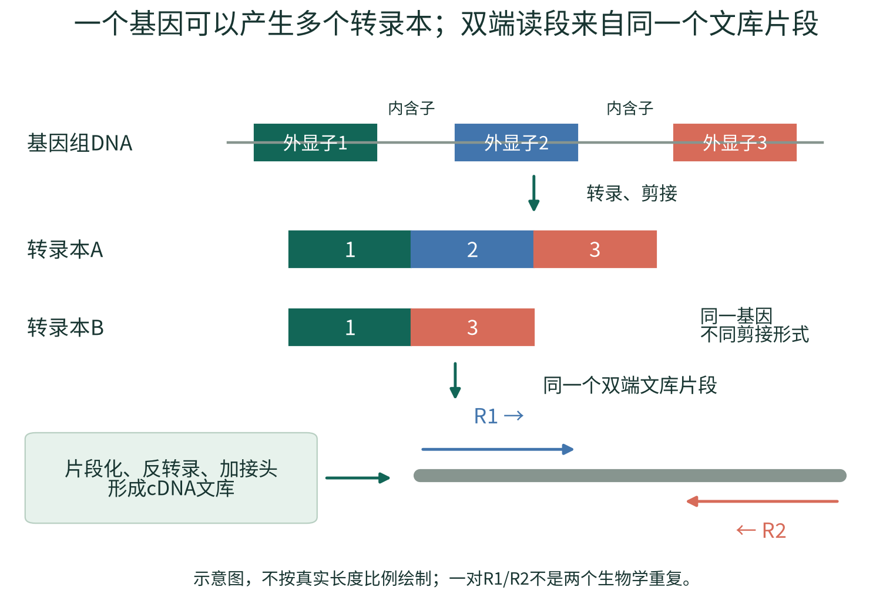
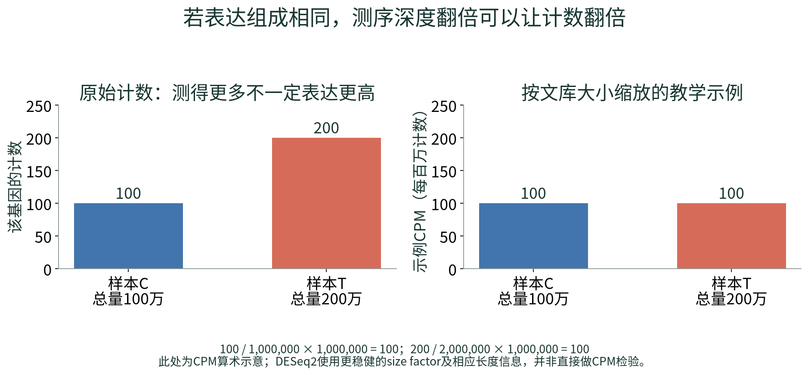
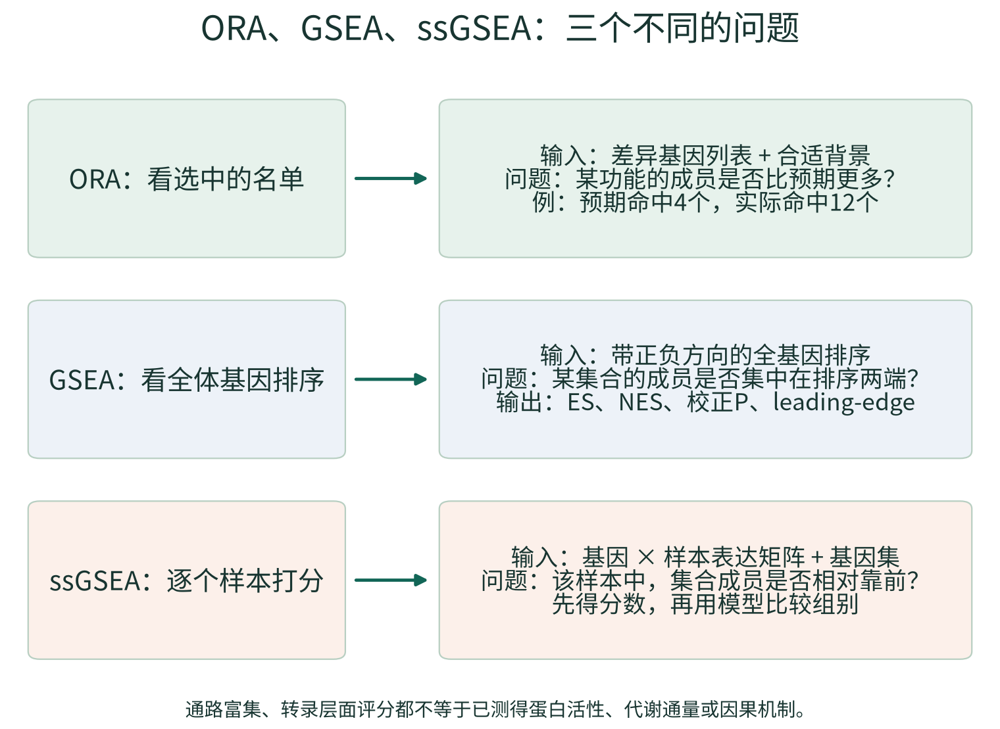
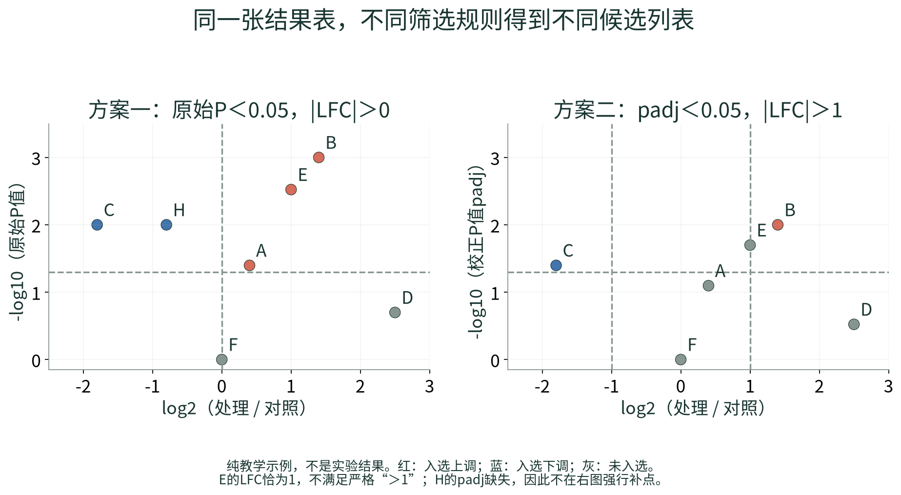

说明书版本：2026.10.26-r2
适用程序：小鼠 bulk RNA-seq 工作站 2.0，Windows + WSL2 Ubuntu 24.04 或原生 Ubuntu。本文对应当前仓库实际实现；每个任务的真实设计、软件版本与完成状态，以该任务保存的参数、R-session、日志和报告为准。说明书编写日期：2026-10-26。
本版按新手学习顺序重写：先理解RNA、建库测序、计数和统计，再使用软件。重要术语在首次出现时解释，配有原理图、计算例子、结果判读和自测答案；操作部分继续对应实际程序。示例样本名、数值、基因和路径仅用于教学，不代表实验发现。工作站不会把演示注释或合成数据当作真实小鼠生物学证据。
导读：先学知识，再按工作站步骤操作
这份教程分成两层。前面的“入门1—入门9”解释测序与分析究竟在做什么；后面的第1—26章对应工作站的操作、方法细节和可追溯资料。第一次接触转录组时，建议先读入门部分，再按实际输入类型完成操作。遇到术语，可回看文末按主题分组的词表。
| 你现在的目标 | 建议阅读顺序 | 读完应能做出的判断 |
|---|---|---|
| 第一次认识RNA-seq | 入门1—6 → 入门9 | 能说明样本如何变成读段、基因计数与结果表 |
| 准备自己的实验 | 入门7—8 → 第3—5章 | 能区分独立重复、技术重复、配对和批次混杂 |
| 判断一份差异结果 | 入门8 → 第8—10章 → 第18章 | 能同时解释变化大小、重复间波动、P与padj |
| 理解GO/KEGG/GSEA | 入门9 → 第11—16章 | 知道数据库、富集检验、样本评分分别是什么 |
| 在当前电脑上操作 | 第2、4、5章 → 对应结果章节 | 能启动、选择正确入口、核对当前项目并找到输出 |
阅读时反复问四个问题： 输入是什么？这一步解决什么偏差或问题？输出是什么单位？它不能证明什么？ 不必先掌握所有公式，但必须理解这些问题。本文所有教学数字和图都是人为构造的示例，不是你的实验结果，也不是公司报告的重新计算结果。
入门1：RNA-seq测量的是什么
从DNA、基因到RNA和转录本
DNA是保存遗传信息的分子；基因是基因组上与某种功能产物有关的一段序列。一个基因被 转录 后产生RNA。对许多真核蛋白编码基因而言，初始RNA经过加工、剪接，把部分区段连接成成熟RNA；最后可以被翻译成蛋白。但也有许多RNA不编码蛋白。
外显子（exon） 是保留在相应成熟转录本中的区段； 内含子（intron） 是加工时被移除的区段。外显子不等于“全部能翻译成蛋白”：外显子中也可能包含不被翻译的区段。一个基因可以采用不同的剪接组合或起止位置，形成不同的 转录本（transcript，也常称isoform） 。因此，“有多少基因”和“有多少转录本”不是同一个问题。

图1的彩色区段仅用来帮助理解。图1中的同一基因产生转录本A和B时，基因层面的表达可以概括这个基因的总信号；但基因表达不变，并不保证两个转录本的比例没有改变。当前主线最后以基因层面的差异分析为主，不能把它直接称为差异剪接分析。
“表达高”是什么意思
在RNA-seq中，表达通常指某个基因或转录本的RNA在样本中的相对丰度。RNA更多，通常有更多机会被抽取、建库和读到；但实际读到多少还受文库制备、测序深度、序列偏好、转录本长度及样本组成影响。因此，读段数量是丰度的带有技术影响的观测，既不是每个细胞的精确分子数，也不是蛋白量。
转录组（transcriptome） 是某个样本、状态和时间下的RNA集合。DNA可以大体相同，但肝脏和肌肉、处理前和处理后，哪些基因被转录以及转录多少可以不同。RNA-seq就是通过测序去观察这种差异。
bulk为什么特别需要注意细胞组成
bulk RNA-seq把一块组织或一群细胞的RNA混合后测量，得到的是混合信号。例如，处理组组织中免疫细胞比例从10%增加到30%，一个免疫细胞相关基因可能升高，即使每个免疫细胞内该基因的表达都没有变化。
所以，“这个基因在组织中升高”与“这个基因在某一种细胞内被上调”是不同结论。当前工作站没有内置细胞成分去卷积；判断细胞来源需要额外标记、独立细胞比例信息或专门方法。RNA增加也不自动表示蛋白增加、酶活性增强或疾病因果作用。
如果你熟悉16S，可以这样对照：16S常以ASV/分类群的相对组成回答“有哪些微生物、比例怎样”；这里以基因/转录本回答“样本中的哪些RNA相对更多或更少”。两者都面临组成和重复问题，但对象、参考数据库和统计模型不能直接互换。[22,23]
入门2：一管RNA怎样变成可以分析的测序文件
常见短读长RNA-seq实验链条
| 实验步骤 | 通俗理解 | 为什么会影响后续结果 |
|---|---|---|
| 取样、提取RNA | 从真实组织中得到RNA | 取样位置、保存时间、降解、DNA污染都可能改变信号 |
| 检查RNA质量 | 检查材料是否完整、是否适合建库 | RIN、DV200等来自实验检测，不是工作站从计数表推算的值 |
| 富集或去除某些RNA | 让有限的测序量集中到目标RNA | poly(A)富集与去rRNA的检测范围和偏倚不同 |
| 片段化与反转录 | 把较长RNA处理成适合建库的片段，并制成cDNA | 片段大小、降解和酶反应会影响覆盖与偏好 |
| 加接头、样本索引及扩增 | 加上测序所需的“接口”和样本标签，按方案进行PCR | 接头残留、索引错误和扩增偏倚可影响读段 |
| 测序与拆分样本 | 读取碱基，再按样本索引区分不同文库 | 最终得到每个样本的FASTQ及质量值 |
这是常见工作流的概括，不代表所有试剂盒步骤、顺序和参数完全相同。应保留建库说明书及公司提供的实验质控记录。
其中，RIN（RNA integrity number，RNA完整性指标）通常以1—10评分概括相应检测到的完整性，较高一般表示更完整；DV200表示长度大于200个核苷酸的RNA片段所占比例，常在降解材料等情境作为参考。它们不是同一单位，也不能脱离检测方法和建库方案设一个所有实验通用的合格线。工作站没有原始实验检测信号，不能从FASTQ或计数矩阵补算出这些指标。
poly(A)富集和去rRNA为什么不能当作同一件事
许多成熟mRNA具有poly(A)尾，可以据此富集，减少其他RNA占用测序量，但可能遗漏不带相应尾结构的RNA；降解还会带来覆盖偏倚。去rRNA则针对大量存在的核糖体RNA进行去除，常保留更广的其他RNA，具体结果取决于试剂方案。
核糖体RNA本身是正常细胞RNA；问题通常是它是否占用了本次实验不希望花费的大量测序量。当前FASTQ质控和Salmon映射率不能独立给出精确的rRNA污染比例。没有测量或专门分析时，不要把“低映射率”直接改写成“rRNA污染已证实”。
测序仪是怎样“读字母”的
常见Illumina短读长测序使用边合成边测序的思想：许多文库片段在流动槽上形成可被检测的信号簇；每个循环掺入并识别碱基，仪器把信号转成A/C/G/T及对应的可信度。这与直接观察完整RNA分子不是一回事。实验通常读的是cDNA文库。[24]
把常见的“边合成边测序”再拆开看，可以理解为反复进行以下循环：
- 一个文库片段被扩增成足以检测的信号簇，使相应序列的信号更容易读取。
- 测序反应引入可被识别、并暂时限制继续延伸的核苷酸；按模板加入相应互补碱基。
- 对信号成像或进行相应检测，软件判断这个簇在当前循环对应哪个碱基。
- 去除相应标记或阻断后，继续下一个循环；不同平台具体通道和化学设计有所不同。
- 多个循环的碱基判断串起来形成read，同时依据判断的可靠性给出质量值。
因此，FASTQ中既有“读到了什么”，也有“每个位置有多可靠”。仪器不能通过某个单独颜色直接读出“这个基因升高2倍”；基因丰度需要经过后续匹配、计数、归一化和统计才获得。一个循环的质量也不等于整个实验是否设计正确。
样本索引使多个文库可以一起上机后再拆分；样本属于Control还是Treatment仍依赖实验记录和样本表，不是软件从序列中自动识别。组别填错时，程序可能顺利跑完，但生物学解释会错误。
样本索引（index/barcode）用于区分文库；UMI是特定建库方案给原始分子增加的随机标记，用来辅助识别扩增副本。它们不是同一个概念。当前工作站不提供通用UMI解析与去重流程，也不把每个普通read直接当作一个独立原始RNA分子。
入门3：reads、fragments、R1/R2、测序量和文库方向
一次观测到底按什么计数
read（读段） 是一段测得的碱基序列； fragment（片段） 是被测序的文库片段。单端测序通常读一个端；双端测序从同一片段两端分别读出R1和R2。于是，一对配对读段包含两个reads，但通常对应一个fragment。它们可能重叠，也可能中间存在没有被直接读到的区段。普通bulk RNA-seq中，相同序列既可能来自扩增副本，也可能与真实高丰度RNA有关；没有合适建库信息时，不能按“序列相同”就把所有重复全部删除。
例如，1000万对PE150读段，意味着约2000万条reads，名义测得约30亿个碱基；它不是2000万个独立动物，也不保证等于1000万个独立RNA分子。过滤、异常配对及重复等情况还会改变后续可用数量。PE150表示双端每端约150个碱基，不表示每个RNA或文库片段只有150个碱基。
| 名称 | 单位或含义 | 最常见的误读 |
|---|---|---|
| read length | 每条读段读到多少碱基，如150bp | 当作文库片段的完整长度 |
| insert/fragment length | 接头之间的文库片段长度 | 当成R1读长；双端读长之和也不一定等于它 |
| sequencing depth | 本次获得的reads、read pairs或bases | 比较两个报告时不核对单位 |
| library size | 按上下文可指总读段或计数矩阵列总量 | 当作细胞总RNA量；两种“总量”也未必相同 |
| biological replicate | 独立生物学对象，如不同小鼠 | 把R1/R2、不同lane或重复上机当独立对象 |
测序更深通常有助于观察低丰度RNA，但不保证增加同样多的新信息，也不能弥补没有生物学重复的设计。对于明确的问题，取样代表性、独立重复和技术一致性往往比一味追加reads更重要。
双端不等于链特异性
链特异性（strandedness）表示建库是否保留原始RNA来自哪一条方向的信息。双端/单端描述“读几个端”，链特异性描述“是否及如何保留方向”，这两个维度相互独立。Salmon中的文库类型是对方向和配对关系的约定，需结合建库试剂和定量结果确认；不能因为文件有R1/R2，就任意选择ISR或ISF。
同一个文库分到多个lane时，仍是同一个生物学样本。正确合并匹配的R1与R2可以增加可用测序量，但不会增加差异分析中的独立样本数。
入门4：FASTQ、Phred、Q20/Q30与“质量合格”的含义
先看一条最小FASTQ记录
@C1_fragment0001/1
ACGTACGTACGT
+
IIIIIIIIIIII
四行依次是读段名称、碱基序列、分隔行、逐碱基质量字符。这里序列与质量字符都为12个。现代常见Phred+33编码中，字符I的ASCII值为73，对应质量分数40；这是编码示例，不是让你根据字母外观估计整个样本的质量。.fastq.gz表示文件经过压缩，解压后记录的生物学含义不变。
Phred质量分数与单碱基错误概率的关系为：Q = -10 × log10(错误概率)。它是测序仪给出的概率估计，需要与样本情况一起解释。
| 质量分数 | 对应单碱基错误概率 | 直观理解 |
|---|---|---|
| Q10 | 10% | 平均约每10个这样的碱基有1个错误 |
| Q20 | 1% | 平均约每100个这样的碱基有1个错误 |
| Q30 | 0.1% | 平均约每1000个这样的碱基有1个错误 |
| Q40 | 0.01% | 平均约每10000个这样的碱基有1个错误 |
Q30比例为90%，表示约90%的碱基质量达到或超过Q30。它不表示“90%的基因是真的”，也不表示“所有reads都90%正确”。整条read全部无错的概率还与各碱基质量和读长有关；不能把单碱基概率直接当作整条序列的概率。
为什么要做接头和质量处理
接头是建库所需的人工序列，不是目标生物转录本。当片段较短或读过目标片段边界时，读段可能包含接头。低质量尾端和接头会干扰后续匹配，fastp用于检测、修剪或过滤这些情况，并记录处理前后的变化。
过滤不是“越严越好”：若把100bp数据的最短保留长度误设为150bp，可能把有效reads大量删除。应结合读长、保留比例、接头、每碱基质量曲线和样本一致性判断，不靠单个Q30或单一经验阈值裁决。GC含量反映G/C碱基比例，还受物种、组织、RNA类型和文库策略影响；它偏离某个数值并不能单独证明污染。
导入提示不等于质量失败。 当你只导入计数矩阵或已有Salmon结果，程序没有原始FASTQ证据去重新计算reads/Q30。质控页写“没有执行原始FASTQ质控”是在交代证据来源，不是判定样本差。此时仍能做表达分布、PCA和样本相关性检查；若需原始测序质量，应补齐FASTQ或查阅原始实验质控报告。
入门5：参考基因组、转录组、注释和基因ID
可以把参考序列理解为“可匹配的文字”，把注释理解为“这些文字的位置、边界、名字和关系”。二者配套，软件才能知道匹配到哪里、属于哪个基因。
| 资源 | 常见格式 | 里面装的是什么 | 在当前工作站中的作用 |
|---|---|---|---|
| 基因组参考 | FASTA | 染色体或其他基因组序列 | 是理解组装和基因位置的基础；不能冒充转录本FASTA输入主线 |
| 转录本参考 | FASTA | 按相应注释定义的转录本序列 | Salmon索引与定量的直接参考 |
| 基因结构注释 | GTF/GFF | 基因、转录本、外显子等位置及属性 | 当前可用匹配GTF构建tx2gene，不代表运行了基因组比对 |
| 转录本—基因对应 | TSV | 哪个转录本属于哪个基因 | tximport将转录本汇总到基因所需的字典 |
| 功能注释 | TSV或注释数据库 | Symbol、Entrez、GO等对应关系 | 帮助查询和功能分析；它不是表达量 |
| 基因集合 | GMT | 一个集合名及其成员ID | 提供GO/KEGG/其他集合的分析对象 |
FASTA通常以>开头的标题行加序列行组成；FASTQ还包含每个碱基的质量值，二者不能互换。GRCm38与GRCm39是不同组装；Ensembl的release是注释版本。只说“都是小鼠文件”仍不足以保证它们配套。
基因与转录本ID也不同：小鼠Ensembl基因ID常以ENSMUSG开头，转录本常以ENSMUST开头；Symbol是如常见基因名称的可读标签；Entrez是另一套编号体系。去掉版本后缀只是在特定条件下处理同一编号的版本形式，不能把人类变成小鼠，也不能自动修复组装不一致或一对多映射。
同一个Symbol可能有别名、旧名或映射歧义。优先保留原始ID，并把Symbol作为注释显示；发现查询匹配多行时，回到实际ID确认。无法注释的基因并不自动是假基因或错误读段，也不能随意套上一个熟悉的名字。
入门6：为什么不能直接拿counts、TPM和FPKM混着比较
counts是怎样来的
基因计数矩阵通常一行一个基因、一列一个样本，格子表示分配给该基因的测序观测数量。对Salmon而言，一些片段可以兼容多个转录本，软件会根据模型估计归属，所以估计计数可能不是整数。工作站通过tximport的标准入口处理这类定量；“导入原始基因计数”入口则要求非负整数，不能把小数TPM随意四舍五入后塞进去。
例1：测得更多，可能只是测得更深
假设同一基因在C样本计数100，在T样本计数200；C的总量为100万，T为200万。在表达组成相同的简化前提下，它们都占总量的万分之一。直接说“处理后升高2倍”会把测序深度差当成表达差。

图2只演示每百万计数CPM的算术：100 / 100万 × 100万 = 100，200 / 200万 × 100万 = 100。 实际DESeq2并不是只按列总数做CPM。 它通常利用许多基因的计数比例估计较稳健的size factor；通过tximport入口时，还处理对应的长度相关信息。
size factor可以直观理解为“这个样本的计数整体需要怎样缩放，才更可比”。它依赖数据和模型的合理性；严重的全局表达组成改变、批次混杂或细胞比例差异，不会因做了一次归一化而自动消失。归一化也不等于把所有样本改成一样。
再走一步：DESeq2的size factor为什么不只看总数
常用的median-of-ratios思路，可拆成“为每个基因建立跨样本参考 → 每个样本与参考作比 → 对许多基因的比值取中位数”。中位数比简单总数较不容易被少数特别高的基因牵着走，这就是这里“稳健”的直觉。软件不是预先知道哪些基因不变；它依赖数据整体构成满足相应条件。
暂不讨论转录本长度offset，只用两个样本、三个基因演示算术。这不是可提交给工作站的完整统计实验：当前程序仍要求足够的独立样本和保留基因。
| 教学基因 | C计数 | T计数 | 跨两样本几何均值 | C/参考 | T/参考 |
|---|---|---|---|---|---|
| G1 | 100 | 200 | 约141.4 | 约0.707 | 约1.414 |
| G2 | 200 | 400 | 约282.8 | 约0.707 | 约1.414 |
| G3 | 100 | 1000 | 约316.2 | 约0.316 | 约3.162 |
几何均值在两个正数时为它们乘积的平方根。分别对最后两列取中位数，得到C的示例size factor约0.707、T约1.414，相对尺度差约2倍。把各计数除以对应因子后，G1的C和T都约141.4；G3则约141.4与707.1，相对约5倍。这样，单个强变化基因不会必然把全部变化都当作文库总量差抹掉。
实际还要处理零计数、可用基因、设计、离散度以及tximport的长度信息。大量基因严重单向改变时，默认归一化前提也可能受挑战；必要时应在实验设计中考虑合适的外部标准，而不是把此小例子当作所有数据的保证。[4]
例2：长度较长的转录本更容易贡献测序片段
在相同分子数量和简化采样条件下，较长转录本通常有更多位置可以产生片段。TPM因此按有效长度及整体丰度构造相对表达指标。用普通长度替代有效长度的教学例子如下：
| 转录本 | 长度 | 计数 | 每kb的计数RPK | 在这个二成员示例中的TPM |
|---|---|---|---|---|
| A | 1kb | 100 | 100 | 约666667 |
| B | 2kb | 100 | 50 | 约333333 |
TPM全称transcripts per million。先得到RPK，再除以全部RPK之和并乘100万，所以该例TPM合计100万。两个转录本counts相同，不代表按长度考虑后的相对丰度相同；反过来，TPM相同也不表示原始计数相同。Salmon使用更完整的有效长度和偏好模型，这张表只是解释单位的例子。[2,25]
FPKM全称fragments per kilobase per million mapped fragments，意为每千碱基、每百万片段的标准化值；RPKM按reads定义；TPM先做长度处理再统一缩放。不能仅因为它们都叫“标准化表达”，就互相替代。TPM/FPKM适合相应表达展示或特定模型，不是当前DESeq2原始计数入口的输入。
| 数据形式 | 当前工作站的主要用途 | 不适合做的事 |
|---|---|---|
| 原始或标准tximport入口的计数 | DESeq2计数模型 | 把不同测序深度的原始值直接当效应 |
| normalized count | 同一基因在不同样本中的表达查看 | 解释为精确RNA分子数；直接跨基因比绝对丰度 |
| TPM | 在约定参考与组成下展示相对表达 | 四舍五入后作为原始counts输入DESeq2 |
| VST | 稳定均值—方差关系，便于PCA、距离和部分挖掘 | 当作counts或当作已经去掉所有批次的矩阵 |
| 行Z-score | 展示每个基因相对自己均值的变化模式 | 据颜色比较不同基因的绝对表达高低 |
入门7：先设计实验，才有可解释的统计比较
重复的关键是“独立”，不是文件数量
比较处理组和对照组，需要知道组间差异是否大于同类样本本来就有的波动。独立小鼠之间的差异有助于估计这种生物学波动；同一份RNA重复上机主要说明技术稳定性，不能替代另一只动物。
贯穿本文的示例为对照C1、C2、C3与处理T1、T2、T3，每个样本来自不同小鼠。它有每组3个生物学重复。R1和R2属于同一个样本，两个lane也不能让每组样本数从3变成6。每组3只是常见起点，不是保证统计功效的万能数量；正式样本数需结合变异、预期效应和研究问题规划。
配对、协变量和批次究竟在说什么
如果同一动物有处理前后两次测量，两次观测共享这个动物的背景，可考虑配对。~ subject + group的直觉是先区分“每个动物本来就不同”，再估计处理因素；当前实现是固定效应的加性模型，不是任意重复测量或随机效应模型。
协变量（covariate） 是模型中需要同时考虑的变量，如批次、年龄或对象。 批次（batch） 是不同日期、试剂批号、操作批或平台等带来的系统差异。把批次加入模型，是在数据允许的条件下估计调整后的组别效应，不是把所有表达矩阵都“洗成没有批次”。
最危险的例子：全部对照在周一建库、全部处理在周五建库。此时组别与批次完全重合，软件无法仅靠现有数据判断变化来自处理还是建库日期，称为 完全混杂（confounding） 。把“batch”写进表格并不能创造缺失的信息。更好的办法是在设计阶段让不同组分散到各批次，并记录真实来源。
样本排除也应有可解释的理由，例如标签确认错误或独立的严重质量证据。仅因为某个点让PCA不漂亮，或者删掉后更显著，就删除样本，会使结论产生选择偏差。保留原始数据、排除理由和必要的敏感性对照。
入门8：倍数、P值、padj、FDR和“没有显著差异”
变化有多大：先理解fold change和log2FC
fold change（FC，倍数变化）通常按处理/对照定义。对数只是把倍数改成对称、便于画图的尺度：log2FC = log2(FC)。
| 处理/对照倍数 | log2FC | 通俗解释 |
|---|---|---|
| 4 | 2 | 处理组约为对照4倍 |
| 2 | 1 | 约2倍 |
| 1 | 0 | 约相同 |
| 0.5 | -1 | 约为一半 |
| 0.25 | -2 | 约为四分之一 |
“上调/下调”必须带比较方向。交换处理和对照会翻转log2FC符号。模型调整或收缩后的log2FC还不一定等于两个简单平均值之比。效应大不保证证据强，效应小也可能因重复稳定而有很小P值。
P值回答的是证据问题
可以把零假设理解为“在指定统计模型下，待比较的组别效应为零”。P值考察：在该假设及模型前提下，出现至少这样极端统计结果的概率。它 不是 “这个基因为假的概率”，也不是“处理有97%的可能性有效”。
试想两个基因都平均升高2倍。第一个在三个处理样本中稳定升高；第二个只有一个处理样本极高、另外两个接近对照。它们的均值和倍数可能相近，但对稳定组别效应的证据不同。差异分析需要同时考虑效应和样本间变异，而不是只排倍数。
为什么同时看几万个基因时要校正
在一个纯教学假设下，若检验10000个实际上无差异的基因，且各原始P在零假设下校准良好，仅用P < 0.05，平均可能筛出约500个假阳性。实际数据不是简单的“恰好500个”，但这个例子解释了多重检验问题。
BH是Benjamini–Hochberg方法名称的缩写，是控制假发现率的一种常用方法。 FDR（false discovery rate，假发现率） 关心所报告发现中的假阳性比例在相应统计意义下的控制；它不是每个入选基因各自“有5%错误”的保证。 padj 是调整后的P值，DESeq2使用相应的BH校正和过滤机制。
五个P值的BH教学算术如下；实际算法还需保证调整值的单调性并限制在1以内：
| 排序名次i | 原始P | 简化计算 P × 5 / i |
本例BH调整值 |
|---|---|---|---|
| 1 | 0.001 | 0.005 | 0.005 |
| 2 | 0.020 | 0.050 | 0.050 |
| 3 | 0.040 | 约0.0667 | 约0.0667 |
| 4 | 0.200 | 0.250 | 0.250 |
| 5 | 0.800 | 0.800 | 0.800 |
因此“原始P为0.02”不等于“校正后也小于0.05”。这个五基因例子不能直接拿来重算DESeq2结果，因为实际测试集合、独立过滤、缺失值等会影响校正。工作站采用严格<，所以本例恰为0.050也不满足padj < 0.05。[4,5]
不显著不等于已经证明没变化
小样本、个体变异大、表达低或效应较小，都可能让统计功效不足。功效是研究在设定条件下发现真实效应的能力。padj > 0.05表示当前数据与模型下证据不足，不是证明效应必为零；也不能因此自动宣称原始P方案更“真实”。应结合效应、变异、设计和后续验证解释。
缺失值NA不是零。低信息基因、过滤或异常影响处理等可导致部分统计量缺失，需看实际原因；不能把NA改成极小P来让火山图更好看。
入门9：把整条流程串成一条证据链
三种入口，拥有的证据不同
FASTQ入口从读段及质量开始；Salmon入口从已完成的转录本定量开始；计数入口从基因矩阵开始。后两者并不是“不完整的假分析”，而是在已经拥有上游结果的前提下从相应位置继续。关键是如实保留哪些步骤做过、由谁做、使用什么参考和参数。
组织/细胞 → RNA提取与建库 → FASTQ（实验与测序环节）
↓
fastp读段预处理
↓
Salmon转录本定量
↓
tximport基因汇总与长度信息
↓
基因计数、样本表 → 归一化与样本结构检查
↓
DESeq2模型 → 每个基因的效应与检验
↙ ↘
按规则筛选DEG名单 全基因排序/表达
↓ ↓
ORA GSEA、ssGSEA等
↘ ↙
通路与候选基因 → 独立验证
工作站从FASTQ、Salmon或计数入口开始，不替代前面的动物实验、RNA提取、建库与测序。每一个箭头都依赖前一步质量；后面的显著结果无法反过来证明前面的设计正确。
数据库不是分析方法
DEG（differentially expressed genes，差异表达基因） 是按声明的效应和统计规则得到的基因名单。它不是原始测序文件，也不是一套固定不变的生物学标签。
GO、KEGG、Reactome和Hallmark提供不同方式组织的功能知识或基因集合。ORA、GSEA和ssGSEA则是利用这些集合提出统计或评分问题的方法。说“做了KEGG”还不够，应该说明“对哪些基因，以什么背景，做了KEGG ORA”，或“用什么排序做了KEGG基因集GSEA”。

例如，某炎症集合可以同时用于ORA、GSEA和ssGSEA，但三种结果不是同一个P值的三种画法。ORA看选中名单是否命中过多；GSEA看成员是否在全排序两端聚集；ssGSEA先给每个样本算分，再用模型比较组别。第12—14章会给出具体数字和解读。
六个样本的简化贯穿例子
假设我们研究一种处理是否改变小鼠肝脏转录状态，有C1—C3和T1—T3六只独立小鼠，组别跨批次安排。先确认样本表、质量和参考一致，再建模。以下假设结果仅用于阅读练习，不是从前面某个小计数表计算出来的DESeq2结果。这是较大结果表中抽出的七行，padj不是只对这七行重新计算的BH结果：
| 示例基因 | log2FC | 原始P | padj | 能说什么 |
|---|---|---|---|---|
| A | 0.4 | 0.040 | 0.080 | 变化约1.32倍；原始P有探索信号，但未通过当前FDR阈值 |
| B | 1.4 | 0.001 | 0.010 | 变化约2.64倍；同时满足两套筛选 |
| C | -1.8 | 0.010 | 0.040 | 约为对照0.29倍；同时满足两套筛选，方向为下调 |
| D | 2.5 | 0.200 | 0.300 | 点在横轴较远处，但当前统计证据不足 |
| E | 1.0 | 0.003 | 0.020 | 约2倍，但不满足本工作站严格的|LFC| > 1 |
| F | 0.0 | 1.000 | 1.000 | 不满足任一方案 |
| H | -0.8 | 0.010 | NA | 可进入原始P探索名单；不能当成校正P显著 |
在这张纯教学表中，方案一入选A、B、C、E、H共5个；方案二入选B、C共2个。一个基因是否入选，同时取决于选定的P列、阈值、效应大小和缺失值处理，不是图上颜色的主观选择。

下一步应回看各重复表达、模型和注释，再解释通路；不要直接把“B入选了多个名单”写成“B已被证明是关键致病机制”。贯穿示例的任务，是教你问对问题，而不是给出一份预设的生物学答案。
1. 工作站能完成什么
本工作站面向小鼠组织、细胞或其他混合样本的 bulk RNA-seq。常规主线是：样本与实验设计 → 原始读段预处理 → Salmon 转录本定量 → tximport 基因汇总 → DESeq2 差异分析 → GO/KEGG/其他 GMT 富集 → 单样本通路和调控活性 → 共表达与表型探索 → 图表编辑、报告及结果归档。
分析不要求先下载官方测试数据。可以直接使用自己的 FASTQ、已有 Salmon 定量或原始基因计数；合成演示仅用于验证程序是否能执行。首次安装依赖和获取参考文件通常需要联网，准备好镜像、参考、真实注释及基因集后，核心统计和网页操作可离线完成。
| 输入入口 | 从哪一步开始 | 能提供的结果 |
|---|---|---|
| FASTQ | fastp 预处理、Salmon 定量 | 测序/定量质控、表达、差异、富集和满足条件的挖掘模块 |
| Salmon quant.sf | tximport 基因汇总 | 保留下来的定量元数据、表达与后续统计；不重做原始 reads 质控 |
| 原始基因计数 | DESeq2 建模 | 表达与后续统计；没有原始 reads 质控和转录本长度信息 |
界面按“样本与实验设计、测序与定量质控、表达与样本诊断、差异基因、GO/KEGG/GSEA、通路与关键基因、共表达与表型、报告与导出”组织，最后提供本使用说明。按顺序查看结果比直接寻找显著基因更可靠：输入或样本质量有问题时，后面的精美图表不能纠正前面的偏差。
2. 本地部署、启动与保存位置
2.1 Windows、Ubuntu、Docker 分别负责什么
Windows 提供文件管理和浏览器；WSL2 Ubuntu 承载 Linux 分析环境；Docker 将 Salmon、R 及相关分析包放在相对固定的计算环境中。网页是控制界面，真正的分析在本机后台执行。仅打开 Ubuntu 窗口不会自动启动网站；关闭浏览器也不等于停止计算。
对于已有 Windows + WSL2 的电脑，推荐继续使用该组合，不需要为了本工作站改成纯 Ubuntu。Java 和 Nextflow 可以保留，但本工作站目前由本地任务管理器调度，并不要求通过 Nextflow 执行。
2.2 首次部署与每天打开
首次下载 GitHub 源码 ZIP 后全部解压，在解压目录双击 部署到D盘.bat。默认目标为 D:\转录组分析工作站，默认网页端口为 8767。完成部署后，每天双击目标目录里的 启动工作站.bat 或桌面快捷方式，即可调用 Ubuntu 后台并打开浏览器。
也可以打开 Ubuntu，执行部署时生成的命令：
bash ~/启动转录组工作站.sh
如果同名脚本已被用户修改，安装器可能保留旧脚本并生成 ~/启动D盘转录组工作站.sh，以部署输出的实际路径为准。采用 Windows D 盘入口时，浏览器地址通常是 http://localhost:8767；直接在 Ubuntu 源码目录运行 bash launch.sh 时默认端口为 8765，不要混淆两个运行位置。
分析期间保持工作站终端运行、电脑不休眠；使用 Docker Desktop 时保持其引擎运行，使用 Ubuntu Docker Engine 时保证其服务可用。正常关闭先确认任务结束，再在工作站终端按 Ctrl+C。
2.3 哪些东西在 D 盘
| 位置 | 保存内容 |
|---|---|
D:\转录组分析工作站\程序\版本摘要\ |
各版本源码；更新通常生成新目录 |
原始数据\ |
用户自行放入的 FASTQ、样本表、计数等；不会自动搬移已有文件 |
参考文件\ |
用户准备的 FASTA、GTF、tx2gene、注释和 GMT |
分析结果\任务ID\ |
每次分析的数据、图表、报告、参数及日志 |
导出报告\ |
可手动选择的导出目标；浏览器默认下载目录不被强制改写 |
配置\workstation.json |
生效的程序目录、发行版、端口和 Python 环境路径 |
日志\server.log |
后台服务日志 |
日志\wsl-launcher.log |
Windows 到 WSL 的调用与错误记录 |
Python 虚拟环境保存在 Ubuntu 文件系统，Docker 镜像由原来使用的 Docker 管理。源码和结果位于 D 盘，不代表 Ubuntu 虚拟磁盘和 Docker 存储也被自动搬到 D 盘。大型 FASTQ 经 /mnt/d 访问可能比 Ubuntu 内部文件系统慢；有空间和性能需求时，可把原始数据放到 Ubuntu 目录并在样本表中填写实际路径。
2.4 网络与代理的已知情况
Windows 能下载文件，不代表 Ubuntu 或 Docker 守护进程使用了相同代理。在 WSL NAT 模式下，Windows 的 127.0.0.1 代理地址不能直接当作 Ubuntu 的本地代理。wsl: 检测到 localhost 代理配置，但未镜像到 WSL 是代理提示，需结合随后命令的退出码和具体网络报错判断。
如果使用 Ubuntu 原生 Docker Engine，构建第一步连接 registry-1.docker.io/v2/ 超时，而 Python 包已安装成功，可按部署文档检查引擎代理。现有辅助脚本为：
sudo python3 scripts/configure_wsl_docker_proxy.py --port 10808
仅在实际使用对应 HTTP 代理端口时运行。脚本先检查通过 Windows 网关访问代理和 Docker Hub，再检查活动容器，备份并合并 Docker 配置，验证、重启和核对生效情况，最后拉取锁定摘要的基础镜像。它适用于本机 Ubuntu Docker Engine，不适用于 Docker Desktop 的代理设置；有运行容器时会要求先正常结束相关任务。WSL 网关重启后可能变化，需要时重新运行。详细步骤见仓库 docs/WINDOWS_D_DRIVE.md。
3. 开始前先明确实验问题
先写清楚组织、品系、性别、年龄、处理、时间、建库方式和比较方向。小鼠不同品系、参考组装及注释版本可能影响可定量基因和映射情况，不能只记录“mouse”。记录组装如 GRCm38/GRCm39、注释来源与 release，并保证参考资源相互匹配。
程序至少要求两个组、总样本数至少 4、每组至少 2 个生物学重复，推荐每组至少 3 个独立重复。两个重复只满足最低计算门槛，不能替代足够的实验设计。技术重复、同一样本不同测序 lane，以及同一动物重复取样，都不应直接当作新的独立生物学重复。
bulk 数据反映混合细胞的平均信号：免疫细胞比例变化、组织取样差异或 RNA 质量变化都可能改变表达。差异不能自动解释为某一种细胞内的调控改变。DESeq2 的常用归一化依赖表达组成的可用信息；存在全局 RNA 产量大幅变化时，应结合实验设计和外部标准，不从常规归一化结果推断绝对转录总量。
对于同一样本不同 lane，先按 R1/R2 配对正确合并原始文件，再建立一个样本条目。配对或重复测量实验应在样本表明确 subject；普通配对差异分析可把 subject 作为协变量，但更复杂的纵向或随机效应模型不是当前内置模型。
4. 准备样本表和三类输入
4.1 通用样本表规则
样本表为带表头的 UTF-8 CSV 或 TSV，必须包含 sample、group。样本名唯一，以字母或数字开头，最多 80 个字符，只使用字母、数字、点、下划线和短横线。分组名不能为空，界面填写的组名必须与表内完全一致。
输入框接受 Ubuntu 路径，也可填写 D:\data\... 或本地 file URI，后两者会转换为 /mnt/d/...。路径必须指向当前 Ubuntu 能读取的本机文件；file:///... 不是上传文件的机制。真实二进制 Excel 工作簿需先另存 CSV/TSV；公司命名为 .xls 的纯文本 TSV 可直接读取。
FASTQ 样本表示例：
sample,group,fastq1,fastq2,batch,subject,disease_score
C1,Control,D:/data/C1_R1.fastq.gz,D:/data/C1_R2.fastq.gz,B1,M01,1.2
C2,Control,D:/data/C2_R1.fastq.gz,D:/data/C2_R2.fastq.gz,B2,M02,1.0
C3,Control,D:/data/C3_R1.fastq.gz,D:/data/C3_R2.fastq.gz,B1,M03,1.1
T1,Treatment,D:/data/T1_R1.fastq.gz,D:/data/T1_R2.fastq.gz,B1,M04,3.1
T2,Treatment,D:/data/T2_R1.fastq.gz,D:/data/T2_R2.fastq.gz,B2,M05,2.8
T3,Treatment,D:/data/T3_R1.fastq.gz,D:/data/T3_R2.fastq.gz,B2,M06,3.2
这里的 subject 是独立动物标识，不代表应把每个唯一 subject 都加入这个非配对示例的模型；把每个样本独有的标识当作协变量会消耗全部自由度。样本表可以保存描述性列，只有被选中的协变量才进入 DESeq2 模型。
4.2 FASTQ 入口
选择“FASTQ → fastp → Salmon”，样本表需有 fastq1；双端增加且完整填写 fastq2。同一任务不能混合单端和双端。准备匹配版本的小鼠转录本 FASTA 及 tx2gene。FASTA 应为转录本序列，例如同版本 Ensembl cDNA 加 ncRNA；不能把完整基因组 FASTA 填到转录本输入框。
从匹配 GTF 生成 tx2gene 的命令为：
.venv/bin/python scripts/prepare_reference.py /data/mouse.gtf.gz /data/tx2gene.tsv
对于 D 盘部署，命令中的 Python 应替换为配置记录的实际虚拟环境解释器，或使用已有可运行该脚本的 Python 3。tx2gene 为带表头的两列 TSV：
transcript gene
ENSMUST00000000001 ENSMUSG00000000001
ENSMUST00000000002 ENSMUSG00000000001
转录本去掉版本后必须唯一；转录本对应多个不同基因时不能直接用于汇总。tximport 忽略转录本版本后缀，基因注释映射也去除基因版本后缀，但这不解决不同参考 release 的实质差异。
4.3 已有 Salmon 入口
样本表包含 sample,group,quant，quant 指向每个样本的 quant.sf，另提供相匹配的 tx2gene。标准字段为 Name、Length、EffectiveLength、TPM、NumReads；Name 不重复，NumReads 为非负有限值。
最好保留 quant.sf 旁边的 aux_info/meta_info.json、lib_format_counts.json 和 cmd_info.json，工作站可复制相应元数据。只有 quant.sf 时仍可汇总表达，但缺失的映射率或方向诊断不会被补造，也不会重新产生 fastp 原始质量报告。
4.4 原始计数入口
样本表只需基础设计列，另选原始基因计数矩阵。第一列为唯一基因 ID，其他样本列至少包含所有入选的 sample，矩阵内容必须是非负整数，不能含 NA、无穷值或总计数为零的样本。示例：
gene,C1,C2,C3,T1,T2,T3
ENSMUSG00000000001,110,95,120,300,280,310
ENSMUSG00000000002,40,55,48,42,50,45
不要把 TPM、FPKM、RPKM、log 表达或已经归一化的数值四舍五入后输入 DESeq2。整数检查只检查格式，不会识别被人为取整的错误数据；数据来源仍需用户确认。原始计数本身缺少转录本长度，当前工作站不会从它反推 TPM。
5. 配置实验设计并通过启动检查
进入“样本与实验设计”，先填写路径并点击“读取样本”，检查分组、数量和是否误选文件。默认保留全部样本；如需排除，在此明确记录。排除后会重新检查每组重复数和设计是否可估计，不会因为某样本在 PCA 中偏离而自动删除。
每个比较填写唯一比较名、对照组和处理组，最多 30 个比较。所有样本共同拟合一个 DESeq2 模型，分别提取所需比较，方向始终是“处理组 / 对照组”。例如 Treatment_vs_Control 中 log2FC 为正表示处理组高于对照组，反向比较会翻转方向。
协变量输入逗号分隔的样本列名，例如 batch,subject；连续变量写为 age:numeric。当样本表存在多水平 batch 且未指定其他设置时，程序默认加入 batch；显式输入 none 表示不调整协变量。应以预检查返回的实际协变量和保存的设计为准。
| 设计例子 | 含义与适用情况 |
|---|---|
~ group |
无其他需调整因素的独立两组或多组比较 |
~ batch + group |
批次与组别存在可区分的信息，可估计组别条件效应 |
~ subject + group |
配对对象在不同组均有观测，且设计有残差自由度 |
~ age + group |
age 被明确声明为 numeric，估计年龄调整后的组别效应 |
若所有对照都在批次 B1、所有处理都在 B2，则批次与处理完全混杂，任何软件都不能仅靠统计把两者分开。设计矩阵不满秩、选中协变量含空值、数值协变量无变化、没有残差自由度时，程序拒绝启动。当前模型是加性设计，不提供任意交互项、随机效应或专门时间序列模型。
在“资源与启动检查”点击“检查样本与参数”，核对实际样本、比较、协变量、可用输出空间和提示，再点击“启动完整分析”。默认 4 线程、容器内存上限 24GB，可在界面配置 1–8 线程、4–28GB；32GB 电脑还需为 Windows、WSL 和浏览器保留内存。任务串行执行，提交后可以切换项目查看状态。
6. fastp：接头和质量预处理
这一步究竟在解决什么
fastp不是根据某个生物学假设去“挑出好基因”，而是处理读段层面的技术问题。可以把它理解为阅读前先检查纸张是否破损、是否夹杂了装订用的标签；真正属于哪本书、哪一段内容，需要后面的定量步骤判断。
看质量曲线时，横轴通常是读段中的碱基位置，纵轴是相应质量概括。末端下降提示后段可靠性可能降低；接头曲线提示人工序列的影响。看过滤前后数量时，要问“哪些原因使reads被丢弃”，而不是把过滤后更少直接当作更差。修剪后可用片段减少，既可能是合理去除低质量部分，也可能是参数设错。
同一组的不同样本若处理保留比例差异很大，应联系实际建库、样本质量和原始文件检查。 程序成功执行只代表这一步跑完，不代表样本已经生物学合格。
本工作站的操作与输出
FASTQ 默认使用 fastp，质量碱基阈值为 Phred 20，保留 read 最短长度为 30；可在界面调整。双端使用接头检测，输出清洁 R1/R2、JSON 和 HTML。对于已经规范预处理的 reads，可以选择跳过 fastp，报告会标记该步骤未运行。
Phred 质量与错误概率的关系是 Q = -10 log10(Perror)，因此 Q20 对应约 1% 单碱基错误概率，Q30 对应约 0.1%。Q20/Q30 比例用于质量概览，不等于整体比对准确率，也不能保证某个基因定量可靠。不要把公司针对特定读长设置的最短 150bp 参数直接用于 100bp 数据。
建议依次查看原始与保留 reads、保留比例、接头量、每碱基质量和 A/T/G/C 曲线、GC 分布，再看样本间一致性。双端 fastp 汇总常按 read 端计数，而 Salmon 可按 fragment 计数；比较不同工具的数量前先确认单位。
明显低质量、接头多、保留比例很低或 GC 异常时，先核对建库和测序信息、原始文件配对、物种及污染可能性。当前工作站不内置完整污染分类或 rRNA 去除诊断，不应仅凭一条曲线确定污染来源。
7. Salmon 与 tximport：从转录本到基因
为什么不是“一个read命中哪里就加1”
一个转录本可能拥有自己独有的区段，也可能与同一基因的其他转录本共享外显子。一个片段若只落在共有区段，就可能兼容多个转录本。简单地把它完整加给每个对象会重复计数，任意只给其中一个又可能产生偏差。
Salmon结合片段与参考序列的兼容情况、独有和共有证据及其模型，迭代估计转录本丰度。概率分配的直觉是：先根据所有证据估计各转录本的相对支持，再重新分配不明确片段的贡献，直到达到算法的收敛条件。它不是用随机猜测替代测序，也不是保证每条片段都能唯一确定来源。
例如，转录本A1和A2共享一段序列。若共有区段有60个兼容片段，不能直接给A1、A2各记60个并声称有120个独立片段；模型会结合其他证据处理这60个片段的归属。这里不预设最后分配比例，因为还依赖长度、独有信息和偏好等因素。
偏好校正（bias correction） 处理某些序列或GC组成在建库和测序中更容易被观测的情况，不等于去除全部实验批次。映射率则是“本次参考和算法下，有多少片段能被匹配/解释”的概括；它既不是每个基因的定量准确率，也不是蛋白或细胞状态的验证。
tximport解决的是下一层问题：当前主要统计单位是基因，但上游估计单位是转录本。它按对应关系汇总，同时保留长度相关信息。若一个基因的不同长短转录本比例改变，简单把TPM或未经说明的数值相加后套计数模型，会遗漏必要信息；标准入口就是为了衔接这两层。
本工作站的操作与限制
Salmon 将 reads/fragment 与转录本参考进行匹配并估计转录本丰度，工作站启用 selective alignment、序列偏好校正和 GC 偏好校正。每个任务建立转录本索引，随后逐样本量化。当前索引未集成完整基因组 decoy；与使用 decoy-aware 索引或基因组比对的其他流程比较时应记录这一差别。[1–3]
文库类型默认 A 自动判断；双端支持 IU/ISR/ISF，单端支持 U/SR/SF。链特异性应根据建库试剂说明和 Salmon 实际方向记录共同确认，不能只凭是否双端判断。查看映射率、兼容方向比例、处理 fragments、估计数量与样本间差异。
程序发现 Salmon 映射率低于 60% 会提出检查提示。这是定位问题的起点，不是所有实验通用的合格线。先检查转录本参考物种/组装/release、R1/R2 匹配、文库方向、数据预处理和潜在污染，再决定是否重新量化。
Salmon 的 fragment mapping rate 不是 HISAT2/STAR 的“基因组 unique mapping rate”，也不能由此推导外显子/内含子比例、基因体覆盖或 IGV 轨迹。Salmon 主线不会生成用于这些分析的基因组 BAM。
tximport 根据 tx2gene 把转录本估计数量汇总到基因，并把长度相关信息交给 DESeq2 的标准入口。工作站保存 TPM 用于表达展示，但统计仍通过 tximport 的估计计数和相应归一化信息建立模型；不能把 TPM 矩阵当作原始计数替换这个过程。
8. 表达诊断：先检查样本结构
为什么先过滤低表达，再看样本结构
极低计数常提供很少信息，却可能有很不稳定的比值。例如从1变成4看起来是4倍，但少量采样波动就可能造成这种差别；从1000稳定变成4000则是另一种信息量。低表达过滤是按事先规定的信息量条件缩小分析对象，不是先用P值挑出“想要的结果”。
原始计数中，高表达基因往往也具有更大的绝对波动。如果直接对所有原始数值计算距离，高计数对象可能主导图形。VST全称variance-stabilizing transformation，即方差稳定变换。它的目的，是让不同平均表达水平的变异关系更适合可视化和相应探索；它不是把“有差异”变成“无差异”，也不是主线差异检验所用的新counts。
怎样理解PCA，而不是只看两团是否分开
PCA即主成分分析：把许多基因共同变化的方向概括成少数坐标轴。一个点是一个样本；PC1是当前所用基因集合中变异最大的线性组合方向，PC2则概括与PC1垂直、用于补充信息的下一主要方向。轴旁的百分比说明这根轴解释了多少变异，不是“有多少基因差异显著”。
如果处理确实影响少数基因、但其他因素造成更大总体变化，PC1/PC2未明显分组也可能有真实差异。相反，若PCA清楚分组但组别与批次重合，也不能据图证明处理效应。点离得远应先调查标签、质量和设计，不能立即删除。
相关性热图问的是“样本整体模式是否相似”。两个样本整体相关性很高，也可能有少数重要基因方向相反；相关性不替代逐基因检验。样本距离与相关性也不是同一个数值，读图前应看图名和实际尺度。
行Z-score的基本算式是(该值 - 这一行的均值) / 这一行的标准差。热图的行Z-score可理解为“这个基因在某个样本比自己的平均水平高或低多少个标准差”。例如A在VST尺度为5、5、8、8，B为12、12、15、15，两行标准化后可以有相同颜色模式；这不表示A与B的原始表达相同。热图颜色要解释相对变化，不能当绝对丰度。
本工作站的诊断设置
低表达过滤默认要求至少 2 个样本 count ≥ 10；可根据实验和比较设计调整。过滤后少于 10 个基因时停止。这个过滤定义在全体保留样本上，不是只保留差异显著基因。
DESeq2 根据计数分布估计归一化因素和离散度。工作站保存 normalized count，以及采用 blind=FALSE 的方差稳定变换 VST。归一化计数用于同一基因的样本表达比较，VST 用于 PCA、距离、相关性和后续挖掘；两者都不是绝对分子数。不同基因间仅比较 normalized count 大小会受到基因长度等因素影响。[4]
PCA 默认取 VST 中变异最高的最多 500 个基因，对样本进行中心化、不逐基因标准差缩放的主成分分析。PC1/PC2 百分比是对应主成分解释的变异比例；分组接近或分离是总体表达结构，不是差异检验的 P 值。
| 图表或指标 | 主要看什么 | 不宜单独得出的结论 |
|---|---|---|
| 文库大小/检测基因数 | 深度、检测范围及离群样本 | 文库更大就一定生物学表达更高 |
| 表达分布 | VST 或 log2(normalized+1)/log2(TPM+1) 的样本分布 | 箱线图相似就消除了批次效应 |
| PCA | 组别、批次、对象和潜在离群结构 | 离群样本必须删除；组间不分离就没有差异 |
| VST Pearson 相关 | 样本整体模式的一致程度 | 相关高就不存在真实组间效应 |
| VST 样本距离 | 多基因表达距离及聚类结构 | 聚在一起就证明样本标签正确 |
| 离散度/Cook 最大值 | 表达均值、变异与异常影响 | 单项数值可以替代完整统计诊断 |
VST、normalized 和 TPM 是不同尺度，图注应写明所用尺度。仅 Salmon/FASTQ 入口保存 TPM。VST 使用了设计信息，不是“已经去除 batch 的表达矩阵”；批次调整体现在模型中，PCA 仍可能看到批次结构。
9. DESeq2：模型、效应与结果列
为什么需要专门的计数模型
RNA-seq的每个基因是在有限测序抽样和生物学波动下得到一组计数。基础泊松模型常把方差限制为等于均值；真实生物学重复之间可能有更大波动。DESeq2使用负二项模型来允许这种额外变异，可用简化关系理解：方差 = 均值 + φ × 均值²，其中φ表示离散程度。这里的φ不是界面上的P值阈值。
平均表达相同的两个基因，如果一个在重复间稳定、另一个波动很大，它们对同一组别效应的统计证据可以不同。DESeq2借助跨基因信息估计、稳定部分参数，使有限样本下的估计更可用，但不能凭空创造独立样本或挽救完全混杂的设计。
广义线性模型（GLM） 把计数分布与实验因素联系起来。~ batch + group的直觉是：对同样的批次条件，处理相对对照的预期表达怎样变化。它不是先把所有批次效应完全擦除，再做一个无批次的小计算。
Wald统计量、标准误和收缩分别是什么
标准误（SE）表示效应估计的统计不确定程度，不是原始样本数值的标准差（SD）。Wald统计量可直观理解为原始效应估计相对其对应标准误有多大，再根据检验分布得到P值。当前若选了LFC收缩，显示LFC和SE可能已更新，但保存的stat与P仍对应原检验，因此不要强求当前LFC / 当前SE必然等于表中的stat。
收缩（shrinkage）会把信息不足、容易出现夸大变化的效应估计向较保守方向稳定。它不是给全部log2FC统一减去一个常数，也不是删除样本或校正批次。当前工作站使用可选normal收缩；方法不同、版本不同的结果应记录清楚，不能把其他教程的apeglm结果当作此处已执行的结果。
阅读结果建议按“方向与效应 → 各重复表达 → 不确定性和P/padj → 注释与生物学背景”来回核对。baseMean较大本身不代表更关键，padj较小也不代表机制更重要。
本工作站的结果列和实际模型
DESeq2 用负二项广义线性模型描述基因计数及其样本间变异，估计归一化信息、离散度和设计中的组别/协变量效应，再以 Wald 检验评估指定比较。批次或年龄调整后的 log2FC 是模型条件效应，不一定等于结果表简单分组均值之比。[4]
| 列 | 含义 |
|---|---|
gene / symbol |
原始基因 ID / 真实注释得到的符号；缺失映射保留为空 |
baseMean |
归一化计数的平均表达水平 |
log2FoldChange |
当前使用的处理/对照 log2 倍数；是否收缩以任务设置为准 |
log2FoldChange_raw |
保留的未收缩 LFC |
lfcSE |
当前 LFC 的标准误，选收缩时随之更新 |
stat |
原始 Wald 统计量；用于全基因 GSEA 排名 |
pvalue / padj |
单基因原始 P 值 / DESeq2 的 BH 校正 P 值 |
mean_control / mean_treatment |
两组 normalized count 的简单平均，属于描述统计 |
significant / direction |
当前双方案筛选定义下是否入选及 up/down/not_significant |
默认不做额外 LFC 收缩，也可选择 DESeq2 normal 先验收缩。收缩可缓和低计数和不稳定大效应，便于展示和排序，但不是增加显著性证据；本工作站保留原始 LFC，原始 Wald stat 仍用于 GSEA。选择收缩可能改变以 LFC 阈值定义的 DEG 数量，方法部分必须记录。
padj=NA 不应当成 1 或 0。低表达独立过滤、异常计数处理或不可估计情况都可能产生 NA，需结合基因均值、诊断和 DESeq2 日志判断。当前筛选不把缺失 P 值认定为显著。
10. 两种差异筛选方案与后续选择
为什么保留两种方案，而不是争论哪个名单一定正确
未校正P方案允许较宽松的探索，通常候选更多；BH方案试图控制多重检验带来的假发现风险，并同时要求更大的效应。二者是在不同证据要求下定义名单，不是对两套不同测序数据的分析。公司采用方案一，也不意味着它自动完成了多重检验控制。
建议先记录两种方案分别有多少总数、上调和下调，再根据用途选择主线。探索候选时可明确标注方案一，并用独立验证承接；做较严格的统计陈述时，要解释FDR与效应阈值。若严格方案为空，应检查功效和设计，诚实报告空结果，而不是悄悄换阈值却继续沿用“FDR显著”的措辞。
入门9中的E恰好log2FC=1，不满足严格>1；A虽有原始P信号，但padj未过线；D倍数大却证据不足。先用这几个例子理解规则，再看自己项目的数量。筛选边界也会受显示四舍五入影响，判断以保存的实际数值为准。
工作站中的固定规则与切换行为
每个比较同时计算、保存以下两套结果，比较符号均为严格小于/大于：
| 方案 | 显著性要求 | 效应要求 | 使用定位 |
|---|---|---|---|
| 方案一 nominal | pvalue < 0.05 |
abs(log2FoldChange) > 0 |
探索性结果，与部分公司报告筛选口径接近 |
| 方案二 strict | padj < 0.05 |
abs(log2FoldChange) > 1 |
BH 多重检验校正并加入效应大小门槛 |
log2FC 为 1 对应约 2 倍，-1 对应约 0.5 倍；由于条件是 >1，恰好 ±1 不入选 strict。>0 几乎不设置实际效应大小门槛，但恰好 0 仍排除。
“差异基因”页面先显示两种方案上调、下调和总数，再选择后续使用哪一种。nominal 不控制跨基因检验的 FDR，不能因为 DEG 更多就说证据更强；即使富集阶段再做 BH，也不会补救前一步未控制的基因选择错误。[5]
| 切换 active profile 会更新 | 保持全基因分析，不随之重新计算 |
|---|---|
| 当前 DEG 清单和数量、完整差异表的 significant/direction | 同一 DESeq2 拟合、原始统计量 |
| all/up/down 的 GO 与 GMT ORA | Wald stat 排名的 GO/GMT GSEA |
| 火山图、MA、差异热图和相应富集展示 | ssGSEA 活性、调控活性、WGCNA 及原有表型关联 |
两个方案共用模型及所选 LFC 列，另一方案不会因切换而删除。strict 没有 DEG 时，应如实报告；可以选择 nominal 做明确标注的探索，或查看不依赖 DEG 阈值的 GSEA，而不是把非显著基因改称 DEG。
图表编辑器里的 P 列、P 阈值和 LFC 显示门槛只控制当前图的显示，不会改写 active profile 的 DEG 和 ORA。需要改变下游方案，应使用两套方案卡片上的选择操作。
11. 准备真实小鼠注释与基因集
先分清“功能概念”和“通路图”
GO是Gene Ontology，按概念及其关系组织基因功能。BP描述参与什么生物过程，MF描述分子层面的功能，CC描述相应细胞组分或位置。它不是三个互斥的基因桶：一个基因可以同时有多个方面和多个层级的注释。GO图具有上下位关系，解释时需要注意相近条目的重复。
KEGG全称Kyoto Encyclopedia of Genes and Genomes，以其策展的通路和相关知识组织基因；小鼠通路常见mmu标识，通路编号与成员基因编号仍是两种对象。Reactome是另一套策展过程知识；Hallmark是MSigDB中经过概括的基因集集合，旨在组织相应表达状态。它们的范围、成员、版本与授权并不完全相同。
同一个集合名称并不保证来自同一物种或同一版本。把人类Symbol当成小鼠成员、把通路编号当成员ID、或用完全不匹配的ID类型，可能导致零命中或错误覆盖。先检查成员匹配与来源，再解释显著性。
实际准备哪些注释文件
11.1 注释与 ID 映射
默认数据库路径使用小鼠 org.Mm.eg.db，输入基因按 ENSEMBL 映射到 Symbol、Entrez、GOALL 和 ONTOLOGYALL；GOALL 包含祖先术语。程序会去掉基因版本后缀后匹配。Symbol 或 Entrez 为主的计数 ID 不应直接假定能走这个 ENSEMBL 数据库入口，需要先可靠转换，或准备以实际输入 ID 为 gene 的离线注释并核对基因集 ID。[6]
离线注释 TSV 必须包含下面五列表头，一个 gene–GO 关系一行，同一基因可占多行：
gene symbol entrez go ontology
ENSMUSG00000000001 Example1 12345 GO:0008150 BP
ENSMUSG00000000001 Example1 12345 GO:0005575 CC
此例仅演示列格式，不是可用于真实分析的基因关联。ontology 只能为 BP、CC、MF 或空，GO 编号为 GO: 后接七位数字。自定义注释应包含需要的祖先 GO 关系；当前导入不会自动把仅有的直接 GO 关联扩展成 GOALL。
有网络且满足依赖条件时，可从源码目录执行 bash scripts/install_mouse_annotation.sh 安装真实小鼠注释，也可从已有可信注释包导出。没有真实 GO 注释时会明确提示 GO 未运行，而不是产生模拟结果。ID 映射率低时先修正 ID/物种/版本，再解释富集。
11.2 GMT：KEGG、Reactome、Hallmark 与自定义集合
GMT 每行是一个基因集，使用 TAB 分隔：通路ID<TAB>描述<TAB>基因1<TAB>基因2...。通路 ID 不重复，文件至少有一个有效集合。界面选择 ENSEMBL、ENTREZID 或 SYMBOL，必须与 GMT 成员一致；不同集合混用 ID 类型会造成不完整匹配。
小鼠 KEGG 物种代码为 mmu。现有获取命令为：
.venv/bin/python scripts/fetch_kegg.py /data/mouse_kegg.gmt
输出 GMT 和对应 .source.json，记录 mmu、ENTREZID、来源、获取时间和 SHA256；界面选 Entrez ID。网络不可用时可以导入已有合法 GMT，KEGG 下载不是制作或打开工作站的前提。遵守 KEGG、MSigDB、Reactome 和其他资源的使用条件，保存资源版本/日期。[7,8]
人类通路或调控网络不能仅把 species 标签改成 mouse 后使用。跨物种转换要记录同源关系版本、映射数量、一对多处理和丢失基因，再确认小鼠 ID 一致。无任何测试基因匹配的 GMT 会报错，避免输出没有实际基因交集的结果。
12. GO/KEGG ORA：差异列表是否过度代表某功能
ORA是在比较观察值和合理的随机预期
ORA全称over-representation analysis，常译为过度代表分析。它先有一份选中的基因名单，再问某个功能集合的成员在名单中是否出现得过多。GO或KEGG提供集合，ORA提供检验方法。
设当前合适背景里有1000个基因，其中40个属于某通路；选中的差异名单有100个，其中12个属于该通路。如果只是从背景抽取同样大小的名单，期望命中约100 × 40 / 1000 = 4个。实际命中12个，比期望更多，但是否足够罕见，需要检验。
| 量 | 示例值 | 含义 |
|---|---|---|
| N | 1000 | 当前背景基因总数 |
| K | 40 | 背景中属于该集合的基因数 |
| n | 100 | 选中的、落在背景内的基因数 |
| k | 12 | 选中名单与集合的交集大小 |
| GeneRatio | 12/100 = 0.12 | 当前选中名单中命中该集合的比例 |
| 背景比例 | 40/1000 = 0.04 | 集合在背景中的占比 |
超几何检验把它看作不放回抽样，计算随机抽到至少12个命中的概率。在这个纯教学参数下，原始P约为0.000269；随后仍需考虑测试了多少集合并进行相应校正。这个数字来自该四参数示例，不是任何真实通路的结果。
(k/n)/(K/N)=3在这个例子中表示相对背景的3倍富集。 不要把它与本工作站的rich_factor混淆 ：当前该列定义为k/K=12/40=0.30。不同报告对“富集因子”等名称的使用可能不同，必须核对公式和图注。
为什么背景会改变答案
若把根本没有机会被本实验检验或没有对应注释的基因都当作背景，随机预期就会改变，P值也可能改变。当前程序以有限Wald统计量、映射与集合覆盖构造背景，具体详见下文；它不是默认使用所有已知小鼠基因。
GO层级中，一个基因可以属于多个相近或上下位条目，多条显著名称也可能由同一批基因驱动。看到20条相关名称，不等于20条独立机制。对上调名单做ORA，最多说明“在上调基因中该功能成员过度代表”；若成员兼有抑制作用、反馈作用或不同细胞来源，仍不能据此证明整个通路被激活。
当前实现、背景与输出
ORA 是对选出的 DEG 做过度代表分析。对每个集合，记 N 为合格背景基因数、n 为背景内被选基因数、K 为该集合在背景内的基因数、k 为选中且落入该集合的数量，通过超几何分布计算观察到至少 k 个命中的尾概率。
本工作站使用本次低表达过滤后、具有有限 Wald stat、ID 可用且能映射到对应集合的基因作为候选背景，再与各数据库集合的成员取交集。它不是“整个小鼠基因组”背景。一个 ID 对应多个表达行时优先保留平均表达较高的一行，不按最显著 P 值挑行。不同输入、映射和参考版本会改变背景及统计结果。
GO 分 BP（生物过程）、CC（细胞组分）、MF（分子功能）；GMT 对应输入的 KEGG/Reactome/Hallmark 等集合。每种数据库都分别生成 all、up、down 三个方向。up/down 表示成员基因的差异方向，不等于整个通路已被功能性激活或抑制。
默认基因集大小范围为 15–500，以实际可测试背景中的集合大小为准，可在界面调整。每个方向内按 GO ontology 对所有可测试集合进行 BH，GMT 在其方向内统一校正；零命中的可测试集合仍参与 ORA 的检验集合。
| 字段 | 解读 |
|---|---|
| overlap / genes | 命中数量及实际成员 ID |
| size / background / selected | 集合在背景内大小 / 背景总数 / 选中总数 |
| gene_ratio | overlap / selected；不是对全部表达基因的比例 |
| rich_factor | overlap / size；与 gene_ratio 分母不同 |
| pvalue / padj | 超几何检验原始 P / 该 ORA 校正范围内 BH P |
| direction / ontology | all/up/down，以及 BP/CC/MF/GMT |
阅读时先确认背景、ID 和方向，再看 padj、命中数量和具体基因，不只看最上方几个通路名。GO 术语具有层级关系，显著术语常共享成员；多个相近术语并不代表多项独立生物学证据。ORA 当前为本项目明确实现的超几何检验，不是直接调用 clusterProfiler。[6,9]
13. GSEA：不先截断 DEG 的排序富集
为什么已经有ORA，还要看GSEA
阈值会把连续证据切成“入选/未入选”。某个集合的成员可能都呈现温和、同方向的变化，却少有单个成员通过严格DEG阈值；ORA可能看不到明显信号。GSEA利用完整排序，问这些成员是否系统性集中在一端。这里“全基因”指当前表达过滤后具有可用统计量并按映射规则处理的基因，不是所有已知小鼠基因。不过“能利用未过阈值的成员”不等于“必定能得到显著结果”。
以12个按统计量由高到低排列的基因为教学例子，若某集合的4个成员集中在第1、2、4、5位，就提示靠前聚集；如果成员均匀分散，证据不同；若主要在末尾，则方向相反。实际检验还需要足够基因、集合大小约束及相应零分布，这个12成员例子不能替代正式fgsea计算。
沿排序向后走，遇到集合成员就按权重增加运行和，遇到非成员就减去相应量；运行曲线相对零偏离的极端程度形成富集分数ES（enrichment score）。NES（normalized enrichment score）是经相应零分布归一化后的分数，便于在限定背景下解释，不是百分比、log2FC，也不能与ssGSEA分数或ULM分数直接比较大小。
方向和leading-edge怎样读
本工作站按原始Wald统计量从高到低排序，正方向对应当前处理/对照比较的正效应。正NES通常表示集合成员靠近处理较高的一端；负NES相反。这个方向是表达排序的方向，不等于已经知道该通路生化功能的净激活或抑制。只用无方向的P值排序会丢失这个信息，不能当作当前默认方法。
leading-edge可理解为驱动该次富集峰的一部分集合成员。它适合缩小后续查看范围，但不是一个独立新实验，也不是因果靶点名单。DEG与leading-edge有交集可以帮助组织证据，不能把来自同一表达数据的两种分析当作完全独立验证。
曲线的横轴是排序位置，竖线表示集合成员命中位置，ES/NES和校正P分别说明分数与证据。log2err描述相应P值估计的不确定性，不是基因的表达变化。重排对照和处理时，应重新核对排序及方向。
当前fgsea方法和输出
GSEA 把可用基因按原始 Wald stat 从高到低排序，检验某基因集是否更集中在排序一端。它可以发现多个成员各有适中变化、但 DEG 截断后不明显的协调信号。因此本工作站的 GSEA 不先按 nominal 或 strict 筛 DEG，切换 DEG 方案不会重跑其排序分析。[10,11]
实际计算使用 fgsea multilevel，默认集合大小 15–500、随机种子 42、初步排列 nPermSimple=1000、精度下限 eps=1e-10、单进程。界面的“fgsea 初步排列次数”不是传统固定排列次数 GSEA 的完整定义；增大它不保证每个集合都能计算出更小 P 值。
| 字段 | 解读 |
|---|---|
| ES | 基于排序命中位置的运行富集分数 |
| NES | 对集合大小等因素标准化后的富集分数 |
| NES 正/负 | 相对富集于处理高于对照的一端 / 对照高于处理的一端 |
| padj | fgsea 此次调用结果的 BH 校正值 |
| log2err | P 值估计不确定性指标之一，需结合日志理解 |
| leadingEdge | 对富集峰贡献突出的核心成员，不等于已验证关键驱动基因 |
GO GSEA 的 BH 范围是该次 GO fgsea 调用的可测试集合，并不是 ORA 那样按 BP/CC/MF 分别校正；GMT GSEA 是另一调用。不要把不同检验集合的 padj 当成可直接互换的数值。样本量、排序信号与基因集结构会影响结果。
富集曲线显示运行 ES、命中位置及 Wald rank track；点击结果表通路可查看。统计达到精度下限、正负分布不平衡或无法可靠估计时，日志会提示，NA 保持 NA，不填造 P 值。单条曲线外观很好看并不替代多重检验、重复样本和成员表达检查。
14. GSVA 包的 ssGSEA：每个样本的通路活性
“每个样本一个分数”与“两组一次富集”不同
GSVA既是一个R包的名称，也可指其中一种评分方法。本工作站使用该包里的ssGSEA（single-sample GSEA，单样本基因集富集评分），不表示同时运行了包里的全部算法。
GSEA通常围绕一个比较的基因排序；ssGSEA则在每个样本内部，依据集合成员在表达排序中的相对位置给出分数。结果是“集合 × 样本”矩阵，能用于查看样本异质性和后续组别比较。它不是对每个样本单独做一次DESeq2。
假设某集合在C1、C2、C3的示例分数为0.10、0.12、0.11，在T1、T2、T3为0.20、0.22、0.19，这提示处理样本的该类转录表达模式相对更高；这些值只是示意，没有通用的“0.2即激活”阈值。实际分数尺度取决于方法设置、输入和所分析的集合，不宜跨任意数据集直接比数值。
本工作站把ssGSEA分数交给limma，按相同协变量设计比较组别。limma在这里处理连续分数并稳定相关方差估计，不是把ssGSEA分数当成原始read counts套负二项模型。分数图、组别效应、校正P以及各重复分布需要一起看。
“通路活性”在这里是依据转录模式推断的简称，不是实际测得的代谢通量、磷酸化、酶反应速率或蛋白活性。bulk中的细胞比例改变同样会影响分数。
当前实现与使用条件
勾选“GSVA ssGSEA 通路活性 + limma 比较”并提供匹配 GMT 后，工作站对 VST 表达计算 ssGSEA 单样本分数，采用 GSVA 包的 method='ssgsea' 和归一化选项。这里使用的是 ssGSEA 方法，不是 GSVA 包中另一个同名 GSVA 算法。[12]
分数表示样本表达对基因集的相对支持程度，不是酶活、代谢通量或直接的绝对通路活性测量。集合大小、成员、预处理和物种映射都会影响分数，不宜跨不一致数据库版本直接比较绝对数值。
组间比较用 limma 对分数建立线性模型，使用与 DESeq2 相同的协变量和比较方向，再进行经验贝叶斯检验。结果中的 logFC 是通路分数差，不是“通路基因表达的 log2 倍数”；显著性通常看 adj.P.Val。[13]
还可输出通路–表型 Pearson 相关及表内 BH 校正，这个相关步骤没有像上述 limma 比较一样调整协变量。把差异活性和表型相关视作两个不同问题，不把未调整的相关结果称为批次调整后的效应。
15. 调控因子活性：decoupleR ULM
为什么转录因子的RNA量不等于它的调控活性
转录因子是参与调控靶基因转录的因子。它的作用还受蛋白量、修饰、定位、相互作用和环境等影响，不能只看转录因子自身mRNA是否升高。基于先验调控网络的方法，尝试从一组靶基因的表达模式推断与某个调控因子作用是否一致。
先验网络的source代表调控因子，target代表靶基因，weight可表达调控方向或强度约定。例如一个靶标受正向调控，另一个受负向调控，观察“正靶标较高、负靶标较低”与相反模式的含义不同。没有方向的普通相关边不自动构成这种网络。
ULM指univariate linear model：对每个调控因子及样本，将其先验靶标权重与观测表达联系，形成相应活性统计分数。这个“单变量”是方法模型的含义，不是说只看一个靶基因。推断依赖网络物种、版本、覆盖和组织适用性；结果是待验证的调控证据，不是直接证明该因子结合了所有靶标。
当前实现与输入要求
提供真实、已转换为小鼠 ID 的 source,target,weight TSV 后，可按先验靶基因表达估计调控因子活动。source 通常为转录因子或其他调控者，target 为基因，weight 表示有符号的调控关系权重。每个 source–target 对唯一，权重为有限非零数；在当前表达数据中至少检测到 5 个靶基因的 source 才进入计算。[14,15]
工作站使用 decoupleR ULM，在 VST 表达和先验网络上估计逐样本分数，再用同设计的 limma 比较各组。网络可来自有权使用的 DoRothEA mouse 等资源，需记录来源、版本、证据等级和 target ID 类型。
调控活性由靶基因模式推断，不等于 source 本身 mRNA 的升降，也不直接测量蛋白量、磷酸化或 DNA 结合。网络缺失或每个调控者匹配靶基因不足时，会标记跳过，不生成假的调控信号。候选调控者仍需结合实验和其他证据验证。
16. WGCNA 共表达模块与表型关联
从“两个基因一起变化”到“模块”
共表达是指基因在一批样本中呈现相似变化模式。它与蛋白之间是否直接结合不同，也不直接告诉你谁调控谁。WGCNA全称weighted gene co-expression network analysis，即加权基因共表达网络分析。它把许多基因的表达相似性组织成加权网络，并识别相互关联的模块，适合在足够独立样本的前提下提出成组的生物学假设。
当前是signed网络。可用邻接权重 = ((1 + 相关系数)/2)^β理解其基本构造，其中β是软阈值功率。例如相关0.8、β=6时权重约0.53；相关-0.8时约为0.000001。这个权重不是P值，也不是直接调控的概率；最终模块识别还涉及进一步的网络结构与聚类处理。
软阈值不是简单删除所有“相关小于某值”的边，而是改变相似性到权重的转换。提高β会更强调强相似关系；怎样选择应看拟合与连接度诊断，不是看哪个参数能得到最符合预期的模块。
eigengene、kME和表型关联
模块eigengene是概括模块表达主要变化的一条轴，通常基于主成分思想，不是把模块里每个基因当成一个新样本。kME描述基因与模块轴的相关型成员度；高kME的基因是模块代表性候选，不自动是最关键的致病因子。
模块—表型相关问的是：模块轴随样本表型是否共同变化。相关系数的正负有方向，P和padj涉及证据，解释还要注意表型编码、样本数及混杂。例如炎症评分与免疫细胞比例同时变化，模块关联可能反映组成，而不一定是某个基因驱动了评分。
本教程的六样本例子不足以在当前工作站运行WGCNA，程序会明确跳过。不能通过把lane、R1/R2或同一只动物重复测量拆成更多行，绕过独立样本前提。
当前实现与可用输出
WGCNA 研究样本间共同变化的基因模块。当前要求至少 15 个独立样本，推荐 20 个以上；如果样本表有重复 subject，模块会跳过，不能把同一动物的多个观测当作独立样本增加自由度。每组 3 个、总计 6 个样本仍可做差异和通路探索，但不满足当前 WGCNA 条件。[16]
默认选取 VST 变异最高的 3000 个基因，可调 100–6000；使用 signed 网络和 signed TOM，模块最小大小 30、每块最多 3000 基因、模块合并阈值 0.25、随机种子 42。先输出软阈值诊断，再使用所填 power 建网络，默认 power=6 仅是初始参数，程序不会自动以最佳拟合替换它。
软阈值诊断同时看 signed scale-free 拟合、slope 和平均连接度；不要只追求一个很高的 R²，导致网络连接过稀。小样本、明显批次结构或强离群可能制造不稳定模块。希望比较其他 power 或筛选基因数，应新建并完整记录一个分析任务。
| 结果 | 含义与使用 |
|---|---|
| 模块颜色/编号 | 共表达簇标识；颜色不是生物功能或稳定跨项目标签 |
| eigengene | 模块表达主要变化轴的概括，不是所有基因的算术均值 |
| kME | 基因与对应模块 eigengene 的相关型成员度 |
| module–trait | 模块 eigengene 与表型的当前未调整 Pearson 相关及表内 BH |
| hub 边表 | 候选高成员度子集的共表达邻接展示，不是完整网络或蛋白互作 |
当前网络边表取绝对 kME 较高的最多 120 个基因，保留 signed 邻接权重大于 0.2 的边，并按权重最多输出 500 条。这个可视化子集不是“所有模块的完整调控网络”。灰色模块通常代表未明确分配的基因，不应像稳定模块那样直接作强解释。
分类表型按水平转成指示变量，数值表型保留其数值，group 自动纳入表型矩阵。模块–表型 Pearson 当前未调整批次、性别等协变量，分类的互补指示变量也不构成彼此独立的生物学验证。相关、共表达和网络中心性都不证明因果；复杂重复测量和混杂需进一步建模。
17. 关键基因探索：把统计结果落回每个样本
“关键”需要什么证据
排序第一的padj、变化最大的log2FC和网络度数最高，分别强调不同性质，不能互相替代。“关键基因”在探索阶段更准确的说法是“优先验证候选”。应先确认ID和各重复，再看效应、统计证据、功能成员、适用的网络与调控先验，最后用独立样本或实验检验。
如果一个候选只由单个极端样本支持，应先调查，而不是只展示组均值。qPCR可帮助验证相应RNA变化，但并不自动证明蛋白或因果功能；功能干预也需要适当对照。来自同一数据的DEG、GSEA核心成员和WGCNA交集，仍共享数据来源，不能称作三次独立实验验证。
当前工作站怎样查询与核对
可在“通路与关键基因”输入 Ensembl ID、Symbol 或有真实映射的 Entrez ID 查询。匹配不区分大小写；基因必须仍在当前过滤保留的表达结果中。若一个查询匹配多行，应检查候选记录和注释，确认当前显示的实际 gene ID，而不是只依赖符号名称。
查看各重复的 normalized count、VST，以及有保存时的 TPM，同时核对 LFC、pvalue、padj 和组内变异。若总体差异由一个样本驱动，或某组几乎全为零，应比对原始计数、Cook 诊断和实验信息；不要只展示最符合预期的组均值。
候选基因建议结合：同方向、足够效应的差异证据；可信通路的 leading-edge；跨重复一致的表达；适用时模块成员度和调控先验；与实验表型或已有文献的一致性。DEG、leading-edge 和 hub 的交集只是候选优先级工具，不会自动转化为已验证的关键靶点。
基因与样本表数值列的关联使用探索性 Spearman。它未调整协变量，也未对“全基因 × 全表型”的搜索作整体校正，P 值不能直接用于高维因果结论。正式证据需要独立样本、预先定义的验证问题，以及合适的 qPCR、蛋白、功能干预等实验。
18. 图表交互、编辑与导出
新手先读坐标和单位，再看颜色
火山图一个点通常对应一个基因。横轴越偏左右，当前log2FC绝对值越大；纵轴越高，所选P列数值越小。-log10(0.05)约为1.301，-log10(0.001)为3。更高不表示表达量更高，而是该P列更小。横轴远但纵轴低的点可能效应大、证据弱；横轴近零但纵轴高的点可能变化小、估计较精确。
颜色是当前筛选和绘图设置的结果，不是独立统计检验。特别要核对纵轴写的是原始P还是padj：原始P火山图的红点不能自动称为“FDR显著”。同理，把显示阈值改宽只改变画图和标注，并没有重新拟合模型或修改已保存的DEG/ORA主线方案。
MA图横轴侧重平均表达、纵轴是效应，常用来观察低表达区的波动或收缩影响；它不是火山图换一种颜色。富集点图里点大小、颜色和横轴分别看图例，不把“圆点更大”直接等同“更显著”。热图则必须注明是VST、行Z-score还是活性分数。
建议先用入门9的示例图练习：找到A、B、D、E，逐个说出入选或未入选的理由，再在自己的项目上点击和标注。正确理解应先于调色、改字体和增加标签。
18.1 火山图定位和标注
火山图横轴为当前使用的 log2FC，纵轴为 -log10(pvalue) 或 -log10(padj)，以轴标签为准。悬停查看基因与数值；点击感兴趣的点可进入基因信息；在“输入基因 ID / Symbol”中填写目标并点击“定位并标注”，可高亮该点。
可以拖动标签位置、调整自动标签数量或指定标签，点击“重绘并保存”保存设置和导出图。极小 P 值绘图时有数值下限处理，以避免无穷坐标；图上的上限并不代表原始统计 P 值被改写。缺失 P 值的基因可能不显示在当前火山图中。
18.2 不同图的用途
PCA 可选择存在且不同的主成分，并设置分组配色；热图可按当前 DEG 选择，也可手动填写基因，使用 VST 的逐行 Z-score 展示相对模式。行 Z-score 不能用来比较两个基因的绝对表达高低。严格方案无 DEG 时，不会自动换成全基因差异热图；手动基因热图应标为自选探索。
热图聚类可切换，当前层次聚类使用 average linkage；样本相关和距离图需结合其实际矩阵含义解读。GO/KEGG 点图的大小可代表命中数量，颜色对应校正 P 值，横轴显示 gene ratio；GSEA 条形图显示 NES。通路活性和 TF 活性热图显示的是各自分数，不要把它们的色标当作 log2FC。
18.3 编辑参数和可交付格式
通用编辑包含标题、坐标名称、宽高、字号、配色、显示数量等；火山图等还提供点大小/透明度、标签、范围和显示阈值。默认图宽 9、高 6 英寸、字号 11、300 dpi；界面允许的范围由程序校验。选择颜色时兼顾组别含义和色觉可辨性，整个报告保持同一组同一颜色。
SVG/PDF 适合矢量排版，PNG 适合常规展示；同时保留每图数据和 .settings.json，便于追溯图从何来。SVG/PDF 在外部软件编辑后要保存独立副本，不应把外部美化结果当作工作站自动生成的原始导出。重绘会更新本任务报告中的相应图。
图注至少说明物种/组织、组别、样本量、比较方向、表达尺度、检验和校正、筛选阈值及重要预处理。图形美观不能替代统计设计，也不应通过裁剪坐标或隐藏不一致重复误导读者。
19. 输出目录、报告和复现记录
D 盘部署结果位于 分析结果/任务ID/；直接源码运行时通常为 runs/任务ID/，也可由环境变量选择输出位置。网页“报告与导出”显示实际目录，不要仅凭旧版源码所在位置猜测结果保存处。
| 文件或目录 | 作用 |
|---|---|
config.json、samples.csv |
实际参数、保留样本、协变量、比较和排除记录 |
input-provenance.json |
部分输入的路径、大小、修改时间及源码版本记录 |
status.json、steps.json、log.txt、execution.jsonl |
状态、分步信息、工具输出及执行命令 |
qc/样本/ |
fastp 清洁 reads、JSON/HTML 和完成标记 |
index/、quant/样本/ |
Salmon 索引、quant.sf 及对应元数据 |
raw-counts.csv、normalized.csv、vst.csv、tpm.csv |
各尺度表达；TPM 仅相应入口存在 |
pca-scores.csv、pca-variance.csv、sample-qc.csv |
样本表达与主成分诊断 |
gene-annotation.csv、gene-sets.json |
本次实际映射及可用集合 |
contrasts/比较名/profiles/nominal或strict/ |
每个比较两套预计算差异及 ORA 结果 |
contrasts/比较名/active-profile.json |
当前下游方案记录 |
gsea.csv、pathway_gsea.csv 及排名表 |
当前比较全基因 GSEA 结果与排名 |
pathway-activity.csv、tf-activity.csv、wgcna-*.csv |
满足输入和样本条件时的挖掘结果 |
mining-status.json、analysis-summary.json |
模块执行/跳过理由、设计及统计汇总 |
dds.rds、R-session.txt |
DESeq2 对象和真实 R 会话版本 |
*.svg、*.pdf、*.png、*.settings.json |
图、绘图设置及对应数据导出 |
report.html、analysis-results.zip |
自包含图像的离线报告与结果包 |
input-provenance.json 不是所有大型输入的完整内容 SHA256 清单；续跑的输入标记主要依赖路径、文件大小和修改时间。正式发表或长期归档时，应另行保存完整原始数据校验值、参考/GMT来源及版本、镜像标识与样本采集记录。
结果 ZIP 当前排除 qc/、quant/、index/ 目录，也不包含外部原始 FASTQ。因此 ZIP 并不是整个实验的全部数据备份；fastp 独立报告、清洁 reads、完整 Salmon 目录和索引如需留存，要单独备份。报告内嵌导出图，可以离线阅读，但不会自动包含尚未执行模块的结果。
20. 重试、取消、更新与数据保留
任务失败时先看“报告与导出”的执行日志，找到第一个实际失败的工具及其错误，而不是只看最后一行的通用退出码。确认输入路径、参考和网络后，可对失败或取消任务点击“重试”。已完成且输入文件路径/大小/修改时间标记一致的 fastp、Salmon 索引和定量可复用；统计和图表会按任务配置继续执行。
重试用于恢复原任务，不是随意更改模型后沿用旧结果。需要改变样本设计、过滤、参考、收缩、基因集或 WGCNA 参数时，建议创建新分析，以保留可比较的参数与结果。切换已有两套 DEG 方案不需要重新拟合模型。
点击“取消任务”会停止对应计算进程和本工作站对应的分析容器，保存已有文件。服务重启后未完成任务会标记失败，便于显式重试，不会宣称中断任务已经完成。删除或移动正在使用的输入、结果或程序目录会破坏任务和可追溯性。
更新前完成或正常取消任务，再使用 D 盘 更新工作站.bat。更新采用独立版本目录准备，成功后切换配置，保留旧版本和结果；活动任务或用户修改过的关键入口可能阻止更新，需按提示处理。源码模式可在确认本地修改和数据已保留后，使用仓库支持的快进更新和安装步骤。下载 Word 使用说明不会自动更新已经部署的程序。
21. 常见问题与处理顺序
| 现象 | 优先检查和处理 |
|---|---|
| 浏览器打不开 | 后台是否启动、终端是否退出、实际端口是8767还是8765、WSL本地转发 |
| 页面仍是旧版 | 旧进程是否仍占端口、更新是否生效、浏览器强制刷新、程序目录与版本 |
| 容器镜像找不到 | Docker服务是否可用、镜像是否安装完成，不仅看Python是否安装成功 |
| Docker Hub超时 | 引擎本身的代理和网络，与Windows浏览器代理分别确认 |
| 样本表读取失败 | UTF-8、CSV/TSV、列名、实际文件路径、是否为真正二进制Excel |
| 设计混杂/自由度不足 | 组别与批次分布、协变量数量、是否把每个样本唯一ID当协变量 |
| Salmon映射率低 | 物种、参考版本、转录本FASTA、双端配对、方向与污染可能 |
| strict没有DEG | 先查设计、重复变异、效应和检验功效；如做nominal探索须标注未控FDR |
| GO未运行/ID查不到 | 真实注释是否准备、基因ID是否为相应版本、映射率和低表达过滤 |
| GMT零匹配 | 物种及ENSEMBL/ENTREZID/SYMBOL选择是否一致 |
| WGCNA跳过 | 独立样本是否达到15、是否有重复subject，而不是简单增加技术重复 |
| 图为空或标签缺失 | 实际结果是否为空、P值是否NA、显示过滤、标签ID、重绘保存是否完成 |
排查时保留原始报错、模块状态和参数。不要为绕过错误而关闭 TLS/校验、伪造注释、强制把 TPM 当计数、自动删除离群样本或把缺失统计值改成显著值。
22. 建议的结果阅读和验证路线
先确认样本及比较方向，阅读 fastp/Salmon/MultiQC 和样本诊断；再核对模型、低表达过滤、实际注释覆盖和两套 DEG 数量。选择一个明确标注的方案作为当前 DEG/ORA 主线，保留另一套用于敏感性对照。
随后联合查看 GO/GMT ORA、全基因 GSEA 和成员表达。若 ssGSEA 或 ULM 提供额外信息，检查其分数差和同设计 limma 结果，而不是把不同统计量放在一张表中直接按数值大小排名。WGCNA 仅在独立样本和质量前提满足时使用。
最后选择少量有一致证据的候选基因/通路，回到每个生物学重复检查；记录阴性和不一致结果，准备独立实验验证。报告应区分“统计差异”“富集关联”“活性推断”“共表达关联”和“已验证机制”，不要把探索级结果写成因果结论。
23. 当前未实现的分析边界
本主线不从 Salmon 结果推算基因组 BAM，不内置 STAR/HISAT2 完整基因组比对、基因体覆盖、外显子/内含子分布、IGV 轨迹、新转录本组装、rMATS 可变剪接或 GATK/SnpEff 变异注释。需要这些结果时，应使用独立成熟流程并保留 BAM、对应参考及专门质量控制。
单细胞分析、空间转录组、差异转录本使用/剪接、细胞成分去卷积、正式中介/因果推断、任意随机效应和复杂时间交互模型也不是当前内置能力。可将本工作站的结果作为进一步分析输入，但需要各方法独立的数据要求、统计设计和验证。
STRING 蛋白互作网络与 WGCNA 共表达网络含义不同；本工作站的共表达边不能标成 STRING 实验互作。尚未运行或所需资源缺失的模块，应在报告中如实写“未运行/跳过”，而非填入示例结果。
附录：先自己回答，再对照的12个入门练习
练习
- 一只小鼠测了两个lane，每个lane都有R1和R2。它算几个生物学重复？
- 1000万对PE150名义上包含多少条reads、多少测序碱基？
- 一个样本Q30比例为90%，能否写成“90%的基因定量正确”？
- 某基因C样本计数100、T样本200，而列总量分别为100万和200万。为什么不能立即写“上调2倍”？
- log2FC为-1表示增加1倍，还是处理约为对照的一半？
- 一个基因
log2FC=2、pvalue=0.01、padj=0.20，能否称为通过了当前严格FDR方案？ log2FC=1、padj=0.02，为什么仍不在本工作站严格方案中？- 对照全在批次B1、处理全在B2，加入batch协变量就能分离处理效应吗？
- 没有严格DEG时，GSEA是否必须为空？出现正NES是否直接证明通路功能被激活？
- 某项目ssGSEA分数0.4，另一项目0.2，能否说前者“通路活性恰好翻倍”？
- 12只动物每只测两次，得到24行样本，能否满足当前WGCNA独立样本条件？
- 导入计数后页面提示没有执行FASTQ质控，这是否已经判定样本不合格？
答案与理由
- 1个。 lane和read方向是技术层面；独立生物学对象仍只有同一只小鼠。
- 约2000万条reads，30亿碱基。 这是名义测序量，实际保留/可用数量还要看过滤和配对；不等于同样数量的独立RNA分子。
- 不能。 Q30针对逐碱基测序质量估计，不是基因层面定量真假的比例。
- 可能只是深度不同。 简化CPM相同；真正分析仍需适当归一化、重复和统计模型。
- 处理约为对照的一半。 因为
2^(-1)=0.5，还需明确当前比较方向。 - 不能。 原始P通过方案一，但padj未满足方案二；应标为相应探索证据，不能换成FDR显著的措辞。
- 边界是严格大于1。 恰等于1不满足
|log2FC| > 1；实际判断用未四舍五入的保存值。 - 不能。 组别与批次完全混杂，现有设计没有区分两者的信息。
- 不必须为空；正NES也不直接证明激活。 GSEA看全排序的成员聚集，方向是当前表达排序的方向，净功能和因果还需更多证据。
- 不能直接这样比。 分数尺度与数据、基因集及设置有关，不是通用绝对活性单位。
- 不能。 当前实现遇到重复subject会跳过，不能把重复测量抬高为24个独立对象。
- 不是。 它只说明当前没有原始读段质控证据；可查原始报告，或补充FASTQ后运行对应步骤。
如果第1—5题还不清楚，先回看入门1—6；第6—8题回看入门7—8和第9—10章；第9—11题回看第12—16章。做题的目的是检查是否理解概念，不用于给真实实验下结论。
24. 方法论文与成熟项目参考
以下论文支持分析原理；实际软件版本以任务的 R-session.txt、定量元数据和执行日志为准。以下资源不等于工作站已经实现其中所有功能。
[1] Chen S, et al. fastp: an ultra-fast all-in-one FASTQ preprocessor. Bioinformatics, 2018. DOI: 10.1093/bioinformatics/bty560。项目：OpenGene/fastp。本工作站实际运行 FASTQ 预处理。
[2] Patro R, et al. Salmon provides fast and bias-aware quantification of transcript expression. Nature Methods, 2017. DOI: 10.1038/nmeth.4197。项目：COMBINE-lab/salmon。本工作站实际运行转录本定量。
[3] Soneson C, Love MI, Robinson MD. Differential analyses for RNA-seq: transcript-level estimates improve gene-level inferences. F1000Research, 2015. DOI: 10.12688/f1000research.7563.2。项目：mikelove/tximport。本工作站实际使用基因汇总与标准 DESeq2 入口。
[4] Love MI, Huber W, Anders S. Moderated estimation of fold change and dispersion for RNA-seq data with DESeq2. Genome Biology, 2014. DOI: 10.1186/s13059-014-0550-8。项目：thelovelab/DESeq2。本工作站实际使用负二项模型、Wald 检验与可选 normal LFC 收缩。
[5] Benjamini Y, Hochberg Y. Controlling the false discovery rate: a practical and powerful approach to multiple testing. Journal of the Royal Statistical Society B, 1995. DOI: 10.1111/j.2517-6161.1995.tb02031.x。支持本工作站所用 BH 多重检验校正原理。
[6] The Gene Ontology Consortium. The Gene Ontology resource: enriching a GOld mine. Nucleic Acids Research, 2021. DOI: 10.1093/nar/gkaa1113。官网：geneontology.org。注释需与物种和版本匹配。
[7] Kanehisa M, et al. KEGG for taxonomy-based analysis of pathways and genomes. Nucleic Acids Research, 2023. DOI: 10.1093/nar/gkac963。官网：KEGG。工作站导入或获取小鼠 GMT，不包含全部 KEGG 可视化和商业资源。
[8] Liberzon A, et al. The Molecular Signatures Database hallmark gene set collection. Cell Systems, 2015. DOI: 10.1016/j.cels.2015.12.004。资源：MSigDB。小鼠或可靠同源转换和授权条件需另外确认。
[9] Wu T, et al. clusterProfiler 4.0: A universal enrichment tool for interpreting omics data. The Innovation, 2021. DOI: 10.1016/j.xinn.2021.100141。项目：YuLab-SMU/clusterProfiler、enrichplot。借鉴富集组织和展示，当前 ORA 使用本项目实现的超几何检验。
[10] Subramanian A, et al. Gene set enrichment analysis: a knowledge-based approach for interpreting genome-wide expression profiles. PNAS, 2005. DOI: 10.1073/pnas.0506580102。支持 GSEA 排序富集原理。
[11] Korotkevich G, et al. Fast gene set enrichment analysis. bioRxiv, 2021 revision. DOI: 10.1101/060012。项目：ctlab/fgsea。这是预印本，工作站实际使用 fgsea multilevel；应同时记录所用包版本。
[12] Hänzelmann S, Castelo R, Guinney J. GSVA: gene set variation analysis for microarray and RNA-seq data. BMC Bioinformatics, 2013. DOI: 10.1186/1471-2105-14-7。项目：rcastelo/GSVA。本工作站实际使用该包的 ssGSEA 功能。
[13] Ritchie ME, et al. limma powers differential expression analyses for RNA-sequencing and microarray studies. Nucleic Acids Research, 2015. DOI: 10.1093/nar/gkv007。本工作站用 limma 比较通路/调控活性分数，不以 limma 替代主线 DESeq2 基因计数模型。
[14] Badia-i-Mompel P, et al. decoupleR: ensemble of computational methods to infer biological activities from omics data. Bioinformatics Advances, 2022. DOI: 10.1093/bioadv/vbac016。项目：saezlab/decoupleR。本工作站实际使用 ULM，不代表已运行其所有推断方法。
[15] Garcia-Alonso L, et al. Benchmark and integration of resources for the estimation of human transcription factor activities. Genome Research, 2019. DOI: 10.1101/gr.240663.118。项目：saezlab/dorothea。论文主要为人类资源，不能直接替代本工作站需要的小鼠网络；使用的 mouse 导出或同源转换需另记录。
[16] Langfelder P, Horvath S. WGCNA: an R package for weighted correlation network analysis. BMC Bioinformatics, 2008. DOI: 10.1186/1471-2105-9-559。项目：cran/WGCNA。本工作站实际运行满足样本前提的 signed 网络。
[17] Ewels P, et al. MultiQC: summarize analysis results for multiple tools and samples in a single report. Bioinformatics, 2016. DOI: 10.1093/bioinformatics/btw354。项目：MultiQC/MultiQC。本工作站 FASTQ 流程实际运行汇总。
[18] nf-core/rnaseq 与 nf-core/differentialabundance：参考样本表、定量/质控、设计、比较和可追溯报告组织；本工作站不是这些流程的完整分支，也未声称执行了其完整 BAM 流程。
[19] EnhancedVolcano、ComplexHeatmap、ideal、pcaExplorer：参考图形布局、标签和诊断优先的交互思路；本工作站实际交互使用本地 Plotly，静态导出使用 Matplotlib、SciPy 与 adjustText。
[20] msigdbr、Reactome：可作为通路资源来源；需自行准备有权使用且 ID/物种一致的 GMT，当前不自动保证所下载资源与样本版本匹配。
[21] kangweihou522-cmyk/16s-：参考 Windows/WSL 本地网页工作站、分步操作与图表编辑方式；转录组主线使用独立定量和计数统计模型。
第三方源代码、稳定源码包及许可范围另见 docs/THIRD_PARTY.md。复用软件方法时应引用实际所用方法和数据资源，而不是仅引用本说明书或一个 GitHub 地址。
[22] Wang Z, Gerstein M, Snyder M. RNA-Seq: a revolutionary tool for transcriptomics. Nature Reviews Genetics, 2009. DOI: 10.1038/nrg2484。用于理解RNA-seq测量对象、实验链条与基本能力。
[23] Conesa A, et al. A survey of best practices for RNA-seq data analysis. Genome Biology, 2016. DOI: 10.1186/s13059-016-0881-8。用于实验设计、质量控制和结果解释的系统入门，不表示当前软件实现其全部方法。
[24] Bentley DR, et al. Accurate whole human genome sequencing using reversible terminator chemistry. Nature, 2008. DOI: 10.1038/nature07517。用于说明常见短读长测序的边合成边测序思想；论文主题不等于本工作站执行了全基因组分析。
[25] Mortazavi A, et al. Mapping and quantifying mammalian transcriptomes by RNA-Seq. Nature Methods, 2008. DOI: 10.1038/nmeth.1226。用于理解测序计数、长度和表达归一化的历史背景；不能把早期指标直接替代当前DESeq2计数模型。
25. 按问题查找的术语词表
这个词表用于查阅，不建议代替前面的例子直接背缩写。遇到同一个词在不同报告中定义略有差别时，以输入、单位、软件和图注为准。
25.1 生物学对象
| 术语 | 英文或缩写 | 直观含义 | 容易混淆的地方 |
|---|---|---|---|
| 基因组 | genome | 保存遗传序列信息的整体参考 | 不等于某一时刻实际表达的RNA集合 |
| 基因 | gene | 与相应功能产物有关的基因组单位 | 不等于一个唯一的转录本 |
| 转录 | transcription | 由DNA信息产生RNA的过程 | 不等于翻译成蛋白 |
| 转录本 | transcript / isoform | 特定起止和加工组合的RNA形式 | 同一基因可以有多个形式 |
| 外显子 | exon | 保留在相应成熟转录本中的区段 | 不保证全部编码蛋白 |
| 内含子 | intron | 加工时移除的相应区段 | 不等于所有非编码序列 |
| 信使RNA | mRNA | 可作为蛋白翻译模板的RNA | RNA-seq可以按方案检测其他RNA |
| 核糖体RNA | rRNA | 核糖体的RNA组成 | 是否“占比过高”取决于目标和文库策略 |
| 非编码RNA | ncRNA | 不以编码蛋白为主要产物的RNA | 不能一概当作无功能背景 |
| 转录组 | transcriptome | 样本及状态下的RNA集合 | 会随细胞类型、处理和时间改变 |
| 混合样本转录组 | bulk RNA-seq | 多细胞混合信号的测量 | 不能自动定位到某一种细胞内的变化 |
| 细胞组成 | cell composition | 样本中各类细胞所占比例 | 比例变化也会改变bulk表达 |
25.2 实验、文库与测序
| 术语 | 英文或缩写 | 直观含义 | 容易混淆的地方 |
|---|---|---|---|
| 反转录DNA | cDNA | 由RNA信息制得的DNA | 常见短读长RNA-seq测的是相应cDNA文库 |
| 文库 | library | 已按方案制备、可供测序的片段集合 | 不等于一个数据库 |
| poly(A)富集 | poly(A) selection | 利用相应尾结构富集RNA | 与去rRNA不是同一种检测范围 |
| 接头 | adapter | 建库附加的人工测序接口 | 接头序列不是目标转录本 |
| 样本索引 | index / barcode | 拆分不同文库的标签 | 不自动等于原始分子标记UMI |
| 分子标记 | UMI | 特定方案用于辅助辨认原始分子的标签 | 当前没有通用UMI处理主线 |
| 文库片段 | fragment | 被采样测序的一段文库分子 | 双端的两条read通常来自同一片段 |
| 读段 | read | 一个端读出的序列 | read条数不等于独立动物数 |
| 单端/双端 | SE / PE | 读取一个端/两个端 | 不直接决定链特异性 |
| PE150 | paired-end 150 | 双端每端约150碱基 | 不保证片段总长等于150或300 |
| 链特异性 | strandedness | 是否、如何保留原始RNA方向信息 | 与SE/PE属于不同维度 |
| 测序lane | lane | 技术上的测序通道/分配 | 同一文库跨lane不是新增生物学重复 |
| 质量控制 | QC / quality control | 收集并检查质量证据的过程 | 不等于只删除reads或保证无偏差 |
| 碱基质量分数 | Phred Q | 测序错误概率的对数表示 | 不等于该基因的统计P值 |
| Q30比例 | Q30 rate | 达到相应碱基质量的比例 | 不是“正确基因”的比例 |
| GC含量 | GC content | G/C碱基在相应序列中的比例 | 异常不能单独确定污染来源 |
| RNA完整性 | RIN / DV200等 | 不同实验检测对材料完整性的概括 | 不能由计数矩阵反推出实验检测值 |
25.3 文件、参考与表达尺度
| 术语 | 英文或缩写 | 直观含义 | 容易混淆的地方 |
|---|---|---|---|
| 序列参考文件 | FASTA | 名称与序列 | 没有逐碱基质量字符 |
| 读段质量文件 | FASTQ | 读段名称、序列、质量等四行记录 | 不可把FASTA改后缀来替代 |
| 结构注释 | GTF / GFF | 基因/转录本/外显子位置与关系 | 不是表达计数表 |
| 组装版本 | assembly | 染色体等参考序列的版本 | 与注释release不是同一层 |
| 稳定编号/符号 | Ensembl / Symbol | 编号体系/可读名称 | 别名和一对多映射需核对 |
| 基因编号 | Entrez ID | 另一种常用基因标识 | 不等于KEGG通路编号 |
| 转录本归属表 | tx2gene | 转录本对应哪个基因的字典 | 需要与实际转录本参考配套 |
| 基因集合文件 | GMT | 集合名称、说明和成员ID | 它定义集合，不提供你的表达量 |
| 计数 | counts | 分配/估计给某对象的测序观测数量 | 不是绝对RNA分子数 |
| 文库计数总量 | library size | 计数列总和等上下文定义的总量 | 不等于每个细胞的总RNA产量 |
| 归一化因子 | size factor | 使样本计数整体更可比的缩放信息 | 不是任意“把图变整齐”的参数 |
| 每百万计数 | CPM | 计数按相应列总量缩放的单位 | 不等于DESeq2的全部归一化/检验过程 |
| 相对丰度 | TPM | 长度处理后统一缩放的相对指标 | 不能取整当作原始计数 |
| 长度/总量标准化 | FPKM / RPKM | 按片段/读段、长度和总量定义的指标 | 不与TPM无条件互换 |
| 方差稳定变换 | VST | 改善均值—方差关系的表达变换 | 不代表已经消除全部批次 |
| 行标准化 | row Z-score | 相对每个基因自身均值和波动的尺度 | 不能比较跨基因绝对高低 |
25.4 实验设计与统计证据
| 术语 | 英文或缩写 | 直观含义 | 容易混淆的地方 |
|---|---|---|---|
| 生物学重复 | biological replicate | 独立生物学对象 | 不等于重复上机或R1/R2 |
| 技术重复 | technical replicate | 同一对象的重复技术观测 | 不能代替独立动物 |
| 配对对象 | subject | 共享对象背景的一组观测 | 每个样本独有ID不应随意作为固定协变量 |
| 批次 | batch | 技术来源的系统差异 | 与处理完全重合时不可仅靠模型区分 |
| 协变量 | covariate | 模型中同时考虑的解释变量 | 记录在表中不等于自动全部进入模型 |
| 完全混杂 | confounding | 因素在现有数据中无法分开估计 | 多加一个参数名不能补足信息 |
| 主成分分析 | PCA | 概括多基因变异方向的降维 | 分组图形不是差异检验 |
| 倍数变化 | FC / log2FC | 效应大小/其以2为底的对数 | 大效应不保证证据强 |
| 标准差/标准误 | SD / SE | 数据波动/估计量不确定性 | 不是同一量，也不等于样本数 |
| 离散度 | dispersion | 计数模型中的额外变异信息 | 不能与P阈值混为同一参数 |
| 原始P值 | pvalue | 指定零假设与模型下的尾部概率 | 不是基因“为假”的后验概率 |
| 调整后P值 | padj | 根据多重检验方法调整的P值 | 不直接等于每个基因错误的概率 |
| 假发现率 | FDR | 对报告发现中假阳性比例的控制概念 | 不表示无条件没有假阳性 |
| BH校正 | Benjamini–Hochberg | 常见FDR控制方法 | 不是对所有P统一乘同一个数即可 |
| q-value | q-value | 某些方法定义的FDR相关量 | 名称相近不保证与当前BH padj数值相同 |
| 统计功效 | power | 在设定条件下检出真实效应的能力 | 不显著不等于已证明无效应 |
| 效应收缩 | LFC shrinkage | 稳定信息不足时的夸大效应估计 | 不等于批次校正或删除离群样本 |
| 缺失统计量 | NA | 当前量未获得/不适用等状态 | 不能改成0或假定显著 |
25.5 功能、调控和网络探索
| 术语 | 英文或缩写 | 直观含义 | 容易混淆的地方 |
|---|---|---|---|
| 差异表达基因 | DEG | 按所声明规则入选的表达差异名单 | 换阈值会换名单，不是新生物学事实 |
| 基因本体 | GO | 按功能概念组织的知识体系 | 与KEGG不是同一套分类 |
| 生物过程/功能/位置 | BP / MF / CC | GO的三个主要方面 | 一个基因可有多个相关条目 |
| 通路数据库 | KEGG / Reactome | 以各自策展方式组织的过程或通路知识 | 数据库名称不能代替检验方法名 |
| 过度代表分析 | ORA | 选中名单是否命中过多集合成员 | 必须说明背景与筛选规则 |
| 基因背景 | universe | 当前检验中有机会进入名单的相应对象 | 不默认等于全基因组所有基因 |
| 全排序集合富集 | GSEA | 集合成员是否集中在排序两端 | 不要求先截成DEG，但仍有输入条件 |
| 富集分数 | ES / NES | 运行和分数/相应归一化分数 | 不是百分比或表达倍数 |
| 核心富集成员 | leading-edge | 驱动该次富集峰的一部分成员 | 不是独立验证或因果靶点名单 |
| 集合评分方法包 | GSVA | 包含多种方法的R包，也有同名算法 | 当前调用的是该包的ssGSEA |
| 单样本集合评分 | ssGSEA | 根据样本内表达排序给集合评分 | 不等于代谢通量或绝对活性 |
| 调控先验 | regulon / prior network | 调控因子及其靶标、方向等知识 | 普通相关边不能直接充当调控关系 |
| 单变量模型推断 | ULM | 基于先验和表达的活性推断方法 | 不是只用一个靶基因作判断 |
| 加权共表达网络 | WGCNA | 从跨样本表达相似性识别模块 | 不等于蛋白物理互作网络 |
| 模块 | module | 共表达结构中的基因分组 | 颜色是标识，不是功能结论 |
| 模块代表轴 | eigengene | 模块主要表达变化的概括 | 不是新增的生物学样本 |
| 模块成员度 | kME | 基因与模块轴的相关型联系 | 高成员度不等于已证实因果 |
| 候选中心基因 | hub gene | 按网络或模块规则优先考察的基因 | “中心”不能自动替代功能验证 |
| 来源记录 | provenance | 参数、输入路径、版本及执行来源 | 不自动等于完整数据或校验和备份 |
26. 说明书、网页与 Word 的同步规则
docs/USER_GUIDE.md 是唯一规范内容来源。后续修改分析方法、输入约束、阈值、图表含义、输出或部署操作时，应在同一次变更中更新对应章节和版本说明，再重新生成网页说明及 Word 文档，并运行同步检查。
网页和 Word 是同一规范源的发布形式，不应分别手工编辑成互相冲突的版本。生成物应随代码一起进入 GitHub；用户本机则需更新工作站版本并重启后台，才会看到新的使用说明。已下载的旧 Word、已经生成的历史实验报告和旧任务参数不会因 GitHub 上的说明书更新自动变化，应保留其版本以便追溯。
本版更新记录：2026.10.26-r2增加九个从零入门单元、四幅原理示意图、逐步计算案例、核心方法的直觉解释、按主题术语表与12题自测；保留实际工作站操作和方法边界。
网页、Word 与文稿同步生成；内容指纹 8945bd4e57df8001b13105b0bfde8bf04505808d7aedc32e473f143bce319835